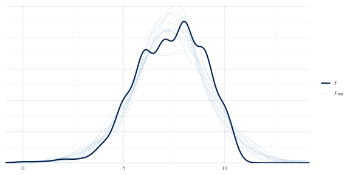
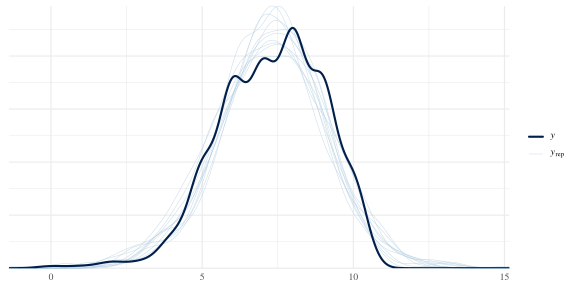
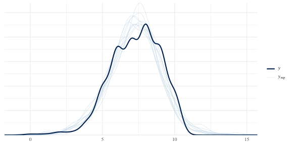

MRP norming tutorial
2025-03-13
knitr::opts_chunk$set(
message = FALSE,
warning = T,
include = TRUE,
error = TRUE,
fig.width = 8,
fig.height = 4
)
library(tidyverse)
library(haven)
library(data.table)
library(ggrepel)
library(kableExtra)
library(brms)
library(tidybayes)
library(marginaleffects)
library(bayesplot)
library(rstan)
# depending on the platform on which you want to run the brm you might need this or not. We ran the models on a Linux-operated server
options(mc.cores = 4,
brms.backend = "cmdstanr")
options(scipen = 999,
digits = 4)
# windowsFonts(Times = windowsFont("Times New Roman"))
theme_set(theme_minimal(base_size = 12, base_family = "Times"))
## load preprocessed datasets (see preprocessing code below)
sb_data <- readRDS("data/preprocessed/wordsum/sb_data.rds")
census_sb <- readRDS("data/preprocessed/us_census/census_sb.rds")
# MRP/RPP function
source("age_norm_comparisons.R")1 Data preprocessing
1.1 Sample data
# load dataset after basic cleaning and labelling (see github.com/synth-science/synth-rep-dataset for the raw data and basic cleaning code)
sb_raw <- read_rds("data/raw/sb/sosci_labelled.rds")
OCC_classification <- readxl::read_xlsx(path = "data/raw/sb/OCC_classification.xlsx", sheet = "classification_table" ) %>%
mutate(occ = as.character(occ_occupation))
# load the degfield classification table
degfield_hierarchy <- readxl::read_excel("data/raw/sb/degfield_hierarchy.xlsx") %>% # contains a classification of the general codes into larger categories based on this wikipedia article: https://en.wikipedia.org/wiki/Outline_of_academic_disciplines
mutate(
degfield_label = str_to_lower(degfield_label),
degfield_category = str_to_lower(degfield_category),
degfield_alternative_category = str_to_lower(degfield_alternative_category))
divisions <- list(
new_england = c("connecticut", "maine", "massachusetts", "new hampshire", "rhode island", "vermont"),
middle_atlantic = c("new jersey", "new york", "pennsylvania"),
east_north_central = c("illinois", "indiana", "michigan", "ohio", "wisconsin"),
west_north_central = c("iowa", "kansas", "minnesota", "missouri", "nebraska", "north dakota", "south dakota"),
south_atlantic = c("delaware", "district of columbia", "florida", "georgia", "maryland",
"north carolina", "south carolina", "virginia", "west virginia"),
east_south_central = c("alabama", "kentucky", "mississippi", "tennessee"),
west_south_central = c("arkansas", "louisiana", "oklahoma/indian territory", "oklahoma", "texas"),
mountain = c("arizona", "colorado", "idaho", "montana", "nevada", "new mexico", "utah", "wyoming"),
pacific = c("alaska", "california", "hawaii", "oregon", "washington")
)
sb_data <- sb_raw %>%
select(CASE,
starts_with("SD"),
gender,
starts_with("WS")) %>%
rename(educ = SD08,
occ = SD10) %>%
setNames(sapply(names(.), function(x) {
label <- attr(sb_raw[[x]], "label", exact = TRUE)
if (!is.null(label)) label else x
})) %>%
rename_all(tolower) %>%
rename(age = "age: [01]",
inctot = "inctot: [01]") %>%
left_join(OCC_classification %>% select(occ, occ_category),
by = "occ") %>% # to classify the occ variable merge with the OCC_classification df
mutate(across(where(~ is.character(.) || is.factor(.) || inherits(., "labelled")),
~ if (is.factor(.)) {
factor(tolower(as.character(.)))
} else if (inherits(., "labelled")) {
haven::labelled(tolower(as.character(.)), attr(., "labels"))
} else {
tolower(.)
})) %>%
left_join(degfield_hierarchy %>% select(degfield_label, degfield_category), # to categorize degfield merge with degfield_hierarchy
by = c("degfield" = "degfield_label")) %>%
rename_all(~ gsub(" ", "_", .)) %>%
rename_all(~ gsub("-", "", .)) %>%
mutate(
region_birth = case_when(
bpl_state %in% divisions$new_england ~ "new england division",
bpl_state %in% divisions$middle_atlantic ~ "middle atlantic division",
bpl_state %in% divisions$east_north_central ~ "east north central division",
bpl_state %in% divisions$west_north_central ~ "west north central division",
bpl_state %in% divisions$south_atlantic ~ "south atlantic division",
bpl_state %in% divisions$east_south_central ~ "east south central division",
bpl_state %in% divisions$west_south_central ~ "west south central division",
bpl_state %in% divisions$mountain ~ "mountain division",
bpl_state %in% divisions$pacific ~ "pacific division",
TRUE ~ "abroad"
),
region_residence = case_when(
state %in% divisions$new_england ~ "new england division",
state %in% divisions$middle_atlantic ~ "middle atlantic division",
state %in% divisions$east_north_central ~ "east north central division",
state %in% divisions$west_north_central ~ "west north central division",
state %in% divisions$south_atlantic ~ "south atlantic division",
state %in% divisions$east_south_central ~ "east south central division",
state %in% divisions$west_south_central ~ "west south central division",
state %in% divisions$mountain ~ "mountain division",
state %in% divisions$pacific ~ "pacific division",
TRUE ~ "abroad"
),
income_brackets = cut(as.integer(inctot),
breaks = c(-Inf, 1000, 6000, 12500, 22500, 35000, 50000, 60000, 75000, 90000, 110000, Inf),
ordered_result = FALSE,
labels = c("< $1,000", "$1,000 - $5,999", "$6,000 - $12,499", "$12,500 - $22,499",
"$22,500 - $34,999", "$35,000 - $49,999", "$50,000 - $59,999",
"$60,000 - $74,999", "$75,000 - $89,999", "$90,000 - $109,999", ">$110,000")),
educ = case_when(
educ %in% c("n/a or no schooling",
"grade 5, 6, 7, or 8",
"grade 9",
"grade 10",
"grade 11",
"grade 12") ~ "high school or less",
educ == "3 years of college" ~ "2 years of college",
TRUE ~ educ # Retain other categories as they are
),
female = sex == "female",
hispan = hispan != "no, not of hispanic, latino, or spanish origin",
marst = case_when(
marst %in% c("divorced", "separated", "widowed") ~ "separated, widowed, or divorced",
TRUE ~ marst # Keep other categories as is
),
race = case_when(
race %in% c("chinese",
"japanese",
"other asian or pacific islander",
"american indian or alaska native",
"other race") ~ "other",
race %in% c("three or more major races",
"two major races (e.g., white and japanese)") ~ "two or more major races",
TRUE ~ race # Keep other categories as is
),
degfield_branch = case_when(
degfield_category %in% c("formal sciences", "interdisciplinary and multi-disciplinary studies (general)", "natural sciences") ~ "natural, formal, and other sciences",
is.na(degfield_category) ~ "n/a",
TRUE ~ degfield_category
),
occ_category = case_when(
occ_category %in% c("Natural Resources, Construction, and Maintenance Occupations", "Service Occupations") ~
"other",
is.na(occ_category) ~ "n/a: unemployed",
TRUE ~ occ_category
),
wordsum_1 = if_else(wordsum_1 == 4, 1, 0),
wordsum_2 = if_else(wordsum_2 == 5, 1, 0),
wordsum_3 = if_else(wordsum_3 == 5, 1, 0),
wordsum_4 = if_else(wordsum_4 == 3, 1, 0),
wordsum_5 = if_else(wordsum_5 == 1, 1, 0),
wordsum_6 = if_else(wordsum_6 == 3, 1, 0),
wordsum_7 = if_else(wordsum_7 == 5, 1, 0),
wordsum_8 = if_else(wordsum_8 == 4, 1, 0),
wordsum_9 = if_else(wordsum_9 == 4, 1, 0),
wordsum_10 = if_else(wordsum_10 == 1, 1, 0),
wordsum = wordsum_1 + wordsum_2 + wordsum_3 + wordsum_4 + wordsum_5 + wordsum_6 + wordsum_7 + wordsum_8 + wordsum_9 + wordsum_10,
wordsum_ordinal = as.ordered(wordsum),
censoring = case_when(
wordsum == 0 ~ "left",
wordsum == 10 ~ "right",
TRUE ~ "none"
)
) %>%
select(CASE = case, age, female, educ, income_brackets, income = inctot, race, hispan, region_residence, state, region_birth, degfield_branch, marst, occ_category, starts_with("wordsum"), censoring) %>%
filter(complete.cases(.)) %>%
left_join(sb_raw, by = "CASE") %>%
select(-ends_with("_R"))
saveRDS(sb_data, "data/preprocessed/wordsum/sb_data.rds")
ggplot(sb_data, aes(x = wordsum)) +
geom_histogram(bins = 11, fill = "blue", color = "black") + # Set bins to 11 for values 0 to 10
scale_x_continuous(breaks = 0:10) + # Set x-axis breaks for each possible value
labs(x = "Wordsum score",
y = "Frequency") + theme(axis.text.x = element_text(angle = 45, hjust = 1),
legend.background = element_rect(fill = "transparent", color = NA),
# panel.grid.major.y = element_blank(),
panel.grid.minor.y = element_blank(),
panel.grid.major.x = element_blank(),
panel.grid.minor.x = element_blank()) +
geom_text(stat = 'count', aes(label = after_stat(count)),
vjust = -0.5, # Adjust vertical position of labels
color = "black") # Color of the labels1.2 Census data
census_sb_raw <- setDT(read_dta("data/raw/us_census/usa_00015.dta.gz"))
OCC_classification <- readxl::read_xlsx(path = "data/raw/sb/OCC_classification.xlsx", sheet = "classification_table" ) %>%
mutate(occ = as.character(occ),
occ_category = tolower(as.character(occ_category))) # change class to character
# Convert labelled columns to factors
census_sb_raw <- census_sb_raw %>%
mutate_if(haven::is.labelled, as_factor)
# Convert to data.table
census_sb_raw <- as.data.table(census_sb_raw)
# Define income brackets
income_breaks <- c(-Inf, 1000, 6000, 12500, 22500, 35000, 50000, 60000, 75000, 90000, 110000, Inf)
income_labels <- c("< $1,000", "$1,000 - $5,999", "$6,000 - $12,499", "$12,500 - $22,499",
"$22,500 - $34,999", "$35,000 - $49,999", "$50,000 - $59,999",
"$60,000 - $74,999", "$75,000 - $89,999", "$90,000 - $109,999", ">$110,000")
# Main processing
census_sb <- census_sb_raw[, `:=`(
income_brackets = cut(as.integer(inctot), breaks = income_breaks, labels = income_labels, ordered_result = TRUE)
)][, .(census_n = sum(perwt)), by = .(state = statefip, sex, age, marst, race, hispan, bpl, educ, degfield, occ, income_brackets)]
# Convert columns to factors and lowercase
factor_cols <- c("state", "sex", "marst", "race", "hispan", "bpl", "educ", "degfield", "occ", "income_brackets")
census_sb[, (factor_cols) := lapply(.SD, function(x) factor(tolower(as.character(x)))), .SDcols = factor_cols]
OCC_classification <- as.data.table(OCC_classification)
degfield_hierarchy <- as.data.table(degfield_hierarchy)
# Join with OCC_classification and degfield_hierarchy
census_sb <- merge(census_sb, OCC_classification[, .(occ, occ_category)], by = "occ", all.x = TRUE)
census_sb <- merge(census_sb, degfield_hierarchy[, .(degfield_label, degfield_category)], by.x = "degfield", by.y = "degfield_label", all.x = TRUE)
# Apply transformations
census_sb[, `:=`(
region_birth = fcase(
bpl %in% divisions$new_england, "new england division",
bpl %in% divisions$middle_atlantic, "middle atlantic division",
bpl %in% divisions$east_north_central, "east north central division",
bpl %in% divisions$west_north_central, "west north central division",
bpl %in% divisions$south_atlantic, "south atlantic division",
bpl %in% divisions$east_south_central, "east south central division",
bpl %in% divisions$west_south_central, "west south central division",
bpl %in% divisions$mountain, "mountain division",
bpl %in% divisions$pacific, "pacific division",
default = "abroad"
),
region_residence = fcase(
state %in% divisions$new_england, "new england division",
state %in% divisions$middle_atlantic, "middle atlantic division",
state %in% divisions$east_north_central, "east north central division",
state %in% divisions$west_north_central, "west north central division",
state %in% divisions$south_atlantic, "south atlantic division",
state %in% divisions$east_south_central, "east south central division",
state %in% divisions$west_south_central, "west south central division",
state %in% divisions$mountain, "mountain division",
state %in% divisions$pacific, "pacific division",
default = "abroad"
),
age = as.numeric(age),
female = sex == "female",
marst = fcase(
marst %in% c("married, spouse present", "married, spouse absent"), "married",
marst %in% c("divorced", "separated", "widowed"), "separated, widowed, or divorced",
default = as.character(marst)
),
educ = fcase(
educ %in% c("nursery school to grade 4", "n/a or no schooling", "grade 5, 6, 7, or 8", "grade 9", "grade 10", "grade 11", "grade 12"), "high school or less",
default = as.character(educ)
),
hispan = hispan != "not hispanic",
race = fcase(
race %in% c("chinese", "japanese", "other asian or pacific islander", "american indian or alaska native", "other race, nec"), "other",
race %in% c("three or more major races", "two major races"), "two or more major races",
default = as.character(race)
),
degfield_branch = fcase(
degfield_category %in% c("formal sciences", "interdisciplinary and multi-disciplinary studies (general)", "natural sciences"), "natural, formal, and other sciences",
is.na(degfield_category), "n/a",
default = as.character(degfield_category)
),
occ_category = fcase(
occ_category %in% c("Natural Resources, Construction, and Maintenance Occupations", "Service Occupations"), "other",
default = as.character(occ_category)
)
)]
# Select and filter
census_sb <- census_sb[, .SD, .SDcols = !c("degfield", "bpl", "state", "occ", "degfield_category", "sex")]
census_sb <- census_sb[between(age, 21, 67)]
# Convert remaining columns to factors
factor_cols <- names(census_sb)[sapply(census_sb, is.character)]
census_sb[, (factor_cols) := lapply(.SD, as.factor), .SDcols = factor_cols]
census_sb <- census_sb %>%
relocate(census_n, .after = "degfield_branch") %>%
group_by(age, female, educ, income_brackets, race, hispan, region_residence, region_birth, degfield_branch, marst, occ_category) %>%
summarise(census_n = sum(census_n)) %>%
ungroup()
saveRDS(census_sb, "data/preprocessed/us_census/census_sb.rds")1.3 Check that the two sources have the same variable categories
cat_sizes_census <- census_sb %>%
select(-age, -census_n) %>%
map_dfr(~ count(tibble(Category = as.character(.x)), Category),
.id = "Variable") %>%
arrange(Variable, Category)
cat_sizes_sb <- sb_data %>%
select(-age, -wordsum, -CASE) %>%
map_dfr(~ count(tibble(Category = as.character(.x)), Category),
.id = "Variable") %>%
arrange(Variable, Category)
anti_join(cat_sizes_census, cat_sizes_sb, by = "Category")## # A tibble: 0 × 3
## # ℹ 3 variables: Variable <chr>, Category <chr>, n <int>2 Distributional disparities
Before applying MRP to correct estimates (be it for norming or other purposes), it’s worthwhile to check if there are any differences between the sample and the population (on which we have data from the census) with respect to the variables we wish to use for the correction.
aggregated_sample <- sb_data %>%
filter(between(age, 21, 67)) %>%
mutate(across(-c(starts_with("wordsum"), censoring, CASE, age, female, hispan, income_brackets), as.factor)) %>%
group_by(age, female, educ, income_brackets, race, hispan, region_residence, region_birth, degfield_branch, marst, occ_category) %>%
summarise(sample_n = n()) %>% ungroup()
disparities_plot <- census_sb %>%
full_join(aggregated_sample, by = c("age", "female", "educ", "income_brackets", "race", "hispan", "region_residence", "region_birth", "degfield_branch", "marst", "occ_category")) %>%
mutate(sample_n = replace_na(sample_n, 0),
census_n = replace_na(census_n, 0),
occ_category = case_when(
occ_category == "management, business, science, and arts occupations" ~ "MBSA",
occ_category == "sales and office occupations" ~ "SO",
occ_category == "production, transportation, and material moving occupations" ~ "PTMM",
occ_category == "service occupations" ~ "S",
occ_category == "natural resources, construction, and maintenance occupations" ~ "NRCM",
TRUE ~ occ_category
)) %>%
pivot_longer(cols = c(census_n:sample_n), names_to = "source", values_to = "n") %>%
mutate(source = str_sub(source, 1, -3),
n = replace_na(n, 0)) %>%
mutate(across(-c(n), as.factor)) %>%
pivot_longer(cols = -c(n, source), names_to = "variable", values_to = "category") %>%
group_by(source, variable, category) %>%
summarise(n = sum(n)) %>%
mutate(percentage = n/sum(n)*100)
# plot age disparities
disparities_plot %>%
filter(variable == "age") %>%
ggplot(aes(x = category, y = percentage, group = source, colour = source, label = round(percentage, digits = 1))) +
theme_minimal(base_size = 9, base_family = "Times") +
geom_line(linewidth = .5) +
facet_grid(cols = vars(variable), scales = "free", space = 'free', as.table = TRUE) +
theme(axis.text.x = element_text(angle = 45, hjust = 1),
legend.position = "none",
# legend.justification = c(1, 1),
legend.background = element_rect(fill = "transparent", color = NA),
panel.grid.major.y = element_blank(),
panel.grid.minor.y = element_blank(),
panel.grid.major.x = element_line(linetype = "dashed", size = 0.3)) +
labs(x = "", y = "Percentage", colour = "", label = "Percentage") +
scale_colour_manual(values = c("#0072B5FF", "#BC3C29FF"), labels = function(x) str_to_title(x)) +
scale_x_discrete(breaks = seq(21, 67, by = 2))## Warning: The `size` argument of `element_line()` is deprecated as of ggplot2 3.4.0.
## ℹ Please use the `linewidth` argument instead.
## This warning is displayed once every 8 hours.
## Call `lifecycle::last_lifecycle_warnings()` to see where this warning was
## generated.
# ggsave("p.png", height = 2, width = 10)disparities_plot %>%
mutate(category = case_when(
variable == "educ" ~ factor(category, levels = c("high school or less", "1 year of college", "2 years of college", "4 years of college", "5+ years of college")),
variable == "income_brackets" ~ factor(category, levels = c("< $1,000", "$1,000 - $5,999", "$6,000 - $12,499", "$12,500 - $22,499", "$22,500 - $34,999", "$35,000 - $49,999", "$50,000 - $59,999", "$60,000 - $74,999", "$75,000 - $89,999", "$90,000 - $109,999", ">$110,000")),
variable == "degfield_branch" ~ factor(category, levels = c("n/a", "humanities", "social sciences", "applied sciences and professions", "natural, formal, and other sciences")),
variable == "occ_category" ~ factor(category, levels = c("n/a: unemployed", "MBSA", "SO", "S", "NRCM", "PTMM")),
variable == "race" ~ factor(category, levels = c("white", "black/african american", "two or more major races", "other")),
variable == "region_birth" ~ factor(category, levels = c("abroad", "pacific division", "middle atlantic division", "new england division", "mountain division", "east south central division", "south atlantic division", "west south central division", "east north central division", "west north central division")),
TRUE ~ category
)) %>%
filter(variable != "age") %>%
ggplot(aes(x = category, y = percentage, group = source, colour = source, label = round(percentage, digits = 1))) +
theme_minimal(base_size = 9, base_family = "Times") +
geom_line(linewidth = .5) +
facet_grid(cols = vars(variable), scales = "free", space = 'free') +
theme(axis.text.x = element_text(angle = 60, hjust = 1),
legend.position = c(1, 1.08),
legend.justification = c(1, 1),
legend.background = element_rect(fill = "transparent", color = NA),
panel.grid.major.y = element_blank(),
panel.grid.minor.y = element_blank(),
panel.grid.major.x = element_line(linetype = "dashed", size = 0.3),
plot.margin = margin(0, 0, 0, .05, "cm")) +
labs(x = "Category", y = "Percentage", colour = "", label = "Percentage") +
scale_colour_manual(values = c("#0072B5FF", "#BC3C29FF"), labels = function(x) str_to_title(x))## Warning: A numeric `legend.position` argument in `theme()` was deprecated in ggplot2
## 3.5.0.
## ℹ Please use the `legend.position.inside` argument of `theme()` instead.
## This warning is displayed once every 8 hours.
## Call `lifecycle::last_lifecycle_warnings()` to see where this warning was
## generated.# ggsave("p.png", height = 3, width = 9)3 Regularised prediction model
This is the MR part of MRP.
3.1 Model comparison
Terms of this form (1 | variable) represent random
intercepts, female and hispan were included as
a fixed effect to avoid estimation problems due to the small number of
categories, s(age) is a thin plate spline of age.
3.1.1 Normal with interactions
brm_1 <- brm(bf(wordsum ~ s(age, by = educ) + (1 | educ) + female + (1 | race) + hispan + (1 | region_residence) + (1 | marst) + (1 | degfield_branch) + (1 | occ_category) + (1 | region_birth) + (1 | income_brackets) +
(1 | educ:race) +
(1 | educ:hispan) +
(1 | educ:region_residence) +
(1 | educ:marst) +
(1 | educ:degfield_branch) +
(1 | educ:occ_category) +
(1 | educ:region_birth) +
(1 | educ:income_brackets) +
(1 | race:hispan) +
(1 | race:region_residence) +
(1 | race:marst) +
(1 | race:degfield_branch) +
(1 | race:occ_category) +
(1 | race:region_birth) +
(1 | race:income_brackets) +
(1 | hispan:region_residence) +
(1 | hispan:marst) +
(1 | hispan:degfield_branch) +
(1 | hispan:occ_category) +
(1 | hispan:region_birth) +
(1 | hispan:income_brackets) +
(1 | region_residence:marst) +
(1 | region_residence:degfield_branch) +
(1 | region_residence:occ_category) +
(1 | region_residence:region_birth) +
(1 | region_residence:income_brackets) +
(1 | marst:degfield_branch) +
(1 | marst:occ_category) +
(1 | marst:region_birth) +
(1 | marst:income_brackets) +
(1 | degfield_branch:occ_category) +
(1 | degfield_branch:region_birth) +
(1 | degfield_branch:income_brackets) +
(1 | occ_category:region_birth) +
(1 | occ_category:income_brackets) +
(1 | region_birth:income_brackets) +
(1 | female:educ) +
(1 | female:race) +
(1 | female:hispan) +
(1 | female:region_residence) +
(1 | female:marst) +
(1 | female:degfield_branch) +
(1 | female:occ_category) +
(1 | female:region_birth) +
(1 | female:income_brackets),
sigma ~ s(age) + (1 | educ) + (1 | race) + hispan + (1 | region_residence) + (1 | marst) + (1 | degfield_branch) + (1 | occ_category) + (1 | region_birth) + female + (1 | income_brackets)
),
seed = 14,
chains = 4,
file = "data/brms/wordsum/sb/brm_1",
data = sb_data) %>%
add_criterion("loo")
brm_1## Warning: There were 76 divergent transitions after warmup. Increasing
## adapt_delta above 0.8 may help. See
## http://mc-stan.org/misc/warnings.html#divergent-transitions-after-warmup## Family: gaussian
## Links: mu = identity; sigma = log
## Formula: wordsum ~ s(age, by = educ) + (1 | educ) + female + (1 | race) + hispan + (1 | region_residence) + (1 | marst) + (1 | degfield_branch) + (1 | occ_category) + (1 | region_birth) + (1 | income_brackets) + (1 | educ:race) + (1 | educ:hispan) + (1 | educ:region_residence) + (1 | educ:marst) + (1 | educ:degfield_branch) + (1 | educ:occ_category) + (1 | educ:region_birth) + (1 | educ:income_brackets) + (1 | race:hispan) + (1 | race:region_residence) + (1 | race:marst) + (1 | race:degfield_branch) + (1 | race:occ_category) + (1 | race:region_birth) + (1 | race:income_brackets) + (1 | hispan:region_residence) + (1 | hispan:marst) + (1 | hispan:degfield_branch) + (1 | hispan:occ_category) + (1 | hispan:region_birth) + (1 | hispan:income_brackets) + (1 | region_residence:marst) + (1 | region_residence:degfield_branch) + (1 | region_residence:occ_category) + (1 | region_residence:region_birth) + (1 | region_residence:income_brackets) + (1 | marst:degfield_branch) + (1 | marst:occ_category) + (1 | marst:region_birth) + (1 | marst:income_brackets) + (1 | degfield_branch:occ_category) + (1 | degfield_branch:region_birth) + (1 | degfield_branch:income_brackets) + (1 | occ_category:region_birth) + (1 | occ_category:income_brackets) + (1 | region_birth:income_brackets) + (1 | female:educ) + (1 | female:race) + (1 | female:hispan) + (1 | female:region_residence) + (1 | female:marst) + (1 | female:degfield_branch) + (1 | female:occ_category) + (1 | female:region_birth) + (1 | female:income_brackets)
## sigma ~ s(age) + (1 | educ) + (1 | race) + hispan + (1 | region_residence) + (1 | marst) + (1 | degfield_branch) + (1 | occ_category) + (1 | region_birth) + female + (1 | income_brackets)
## Data: sb_data (Number of observations: 478)
## Draws: 4 chains, each with iter = 2000; warmup = 1000; thin = 1;
## total post-warmup draws = 4000
##
## Smoothing Spline Hyperparameters:
## Estimate Est.Error l-95% CI u-95% CI Rhat
## sds(sageeduc1yearofcollege_1) 1.73 1.63 0.06 6.02 1.00
## sds(sageeduc2yearsofcollege_1) 1.61 1.40 0.06 5.39 1.00
## sds(sageeduc4yearsofcollege_1) 1.62 1.65 0.05 6.15 1.00
## sds(sageeduc5Pyearsofcollege_1) 1.86 1.29 0.11 5.06 1.00
## sds(sageeduchighschoolorless_1) 1.29 1.16 0.06 4.19 1.00
## sds(sigma_sage_1) 1.14 0.88 0.07 3.30 1.00
## Bulk_ESS Tail_ESS
## sds(sageeduc1yearofcollege_1) 2623 2568
## sds(sageeduc2yearsofcollege_1) 2025 2283
## sds(sageeduc4yearsofcollege_1) 1583 2159
## sds(sageeduc5Pyearsofcollege_1) 1896 1219
## sds(sageeduchighschoolorless_1) 2372 2386
## sds(sigma_sage_1) 1392 1883
##
## Multilevel Hyperparameters:
## ~degfield_branch (Number of levels: 5)
## Estimate Est.Error l-95% CI u-95% CI Rhat Bulk_ESS Tail_ESS
## sd(Intercept) 0.39 0.41 0.01 1.41 1.00 2495 2007
## sd(sigma_Intercept) 0.13 0.15 0.00 0.51 1.00 1812 2667
##
## ~degfield_branch:income_brackets (Number of levels: 52)
## Estimate Est.Error l-95% CI u-95% CI Rhat Bulk_ESS Tail_ESS
## sd(Intercept) 0.16 0.11 0.01 0.42 1.00 1682 1951
##
## ~degfield_branch:occ_category (Number of levels: 24)
## Estimate Est.Error l-95% CI u-95% CI Rhat Bulk_ESS Tail_ESS
## sd(Intercept) 0.36 0.20 0.04 0.81 1.00 1498 1385
##
## ~degfield_branch:region_birth (Number of levels: 47)
## Estimate Est.Error l-95% CI u-95% CI Rhat Bulk_ESS Tail_ESS
## sd(Intercept) 0.13 0.10 0.01 0.37 1.00 2055 2503
##
## ~educ (Number of levels: 5)
## Estimate Est.Error l-95% CI u-95% CI Rhat Bulk_ESS Tail_ESS
## sd(Intercept) 0.43 0.42 0.01 1.58 1.00 2863 2551
## sd(sigma_Intercept) 0.11 0.13 0.00 0.45 1.00 1866 2557
##
## ~educ:degfield_branch (Number of levels: 17)
## Estimate Est.Error l-95% CI u-95% CI Rhat Bulk_ESS Tail_ESS
## sd(Intercept) 0.28 0.22 0.01 0.80 1.00 1537 2010
##
## ~educ:hispan (Number of levels: 10)
## Estimate Est.Error l-95% CI u-95% CI Rhat Bulk_ESS Tail_ESS
## sd(Intercept) 0.33 0.26 0.01 1.00 1.00 1972 2508
##
## ~educ:income_brackets (Number of levels: 53)
## Estimate Est.Error l-95% CI u-95% CI Rhat Bulk_ESS Tail_ESS
## sd(Intercept) 0.14 0.10 0.01 0.37 1.00 1699 2007
##
## ~educ:marst (Number of levels: 15)
## Estimate Est.Error l-95% CI u-95% CI Rhat Bulk_ESS Tail_ESS
## sd(Intercept) 0.23 0.19 0.01 0.68 1.00 1368 2369
##
## ~educ:occ_category (Number of levels: 28)
## Estimate Est.Error l-95% CI u-95% CI Rhat Bulk_ESS Tail_ESS
## sd(Intercept) 0.28 0.17 0.02 0.67 1.00 1560 2061
##
## ~educ:race (Number of levels: 20)
## Estimate Est.Error l-95% CI u-95% CI Rhat Bulk_ESS Tail_ESS
## sd(Intercept) 0.31 0.20 0.02 0.75 1.00 1191 1967
##
## ~educ:region_birth (Number of levels: 48)
## Estimate Est.Error l-95% CI u-95% CI Rhat Bulk_ESS Tail_ESS
## sd(Intercept) 0.11 0.09 0.00 0.33 1.00 2069 1655
##
## ~educ:region_residence (Number of levels: 43)
## Estimate Est.Error l-95% CI u-95% CI Rhat Bulk_ESS Tail_ESS
## sd(Intercept) 0.13 0.10 0.00 0.37 1.00 1777 2289
##
## ~female:degfield_branch (Number of levels: 10)
## Estimate Est.Error l-95% CI u-95% CI Rhat Bulk_ESS Tail_ESS
## sd(Intercept) 0.23 0.20 0.01 0.72 1.00 2170 1890
##
## ~female:educ (Number of levels: 10)
## Estimate Est.Error l-95% CI u-95% CI Rhat Bulk_ESS Tail_ESS
## sd(Intercept) 0.26 0.20 0.01 0.78 1.00 1910 2132
##
## ~female:hispan (Number of levels: 4)
## Estimate Est.Error l-95% CI u-95% CI Rhat Bulk_ESS Tail_ESS
## sd(Intercept) 0.85 1.00 0.02 3.41 1.00 1631 1540
##
## ~female:income_brackets (Number of levels: 22)
## Estimate Est.Error l-95% CI u-95% CI Rhat Bulk_ESS Tail_ESS
## sd(Intercept) 0.19 0.13 0.01 0.51 1.00 1551 2248
##
## ~female:marst (Number of levels: 6)
## Estimate Est.Error l-95% CI u-95% CI Rhat Bulk_ESS Tail_ESS
## sd(Intercept) 0.37 0.40 0.01 1.45 1.00 1818 1726
##
## ~female:occ_category (Number of levels: 12)
## Estimate Est.Error l-95% CI u-95% CI Rhat Bulk_ESS Tail_ESS
## sd(Intercept) 0.27 0.25 0.01 0.94 1.00 2019 2098
##
## ~female:race (Number of levels: 8)
## Estimate Est.Error l-95% CI u-95% CI Rhat Bulk_ESS Tail_ESS
## sd(Intercept) 0.41 0.33 0.02 1.22 1.00 1407 1874
##
## ~female:region_birth (Number of levels: 20)
## Estimate Est.Error l-95% CI u-95% CI Rhat Bulk_ESS Tail_ESS
## sd(Intercept) 0.12 0.09 0.00 0.35 1.00 2523 2453
##
## ~female:region_residence (Number of levels: 18)
## Estimate Est.Error l-95% CI u-95% CI Rhat Bulk_ESS Tail_ESS
## sd(Intercept) 0.14 0.11 0.00 0.42 1.00 2679 2459
##
## ~hispan:degfield_branch (Number of levels: 10)
## Estimate Est.Error l-95% CI u-95% CI Rhat Bulk_ESS Tail_ESS
## sd(Intercept) 0.23 0.21 0.01 0.80 1.00 2628 1960
##
## ~hispan:income_brackets (Number of levels: 22)
## Estimate Est.Error l-95% CI u-95% CI Rhat Bulk_ESS Tail_ESS
## sd(Intercept) 0.15 0.11 0.01 0.43 1.00 2413 2571
##
## ~hispan:marst (Number of levels: 6)
## Estimate Est.Error l-95% CI u-95% CI Rhat Bulk_ESS Tail_ESS
## sd(Intercept) 0.47 0.46 0.02 1.64 1.00 2343 2559
##
## ~hispan:occ_category (Number of levels: 12)
## Estimate Est.Error l-95% CI u-95% CI Rhat Bulk_ESS Tail_ESS
## sd(Intercept) 0.32 0.27 0.01 0.96 1.00 1866 1821
##
## ~hispan:region_birth (Number of levels: 19)
## Estimate Est.Error l-95% CI u-95% CI Rhat Bulk_ESS Tail_ESS
## sd(Intercept) 0.14 0.11 0.01 0.42 1.00 2942 2314
##
## ~hispan:region_residence (Number of levels: 18)
## Estimate Est.Error l-95% CI u-95% CI Rhat Bulk_ESS Tail_ESS
## sd(Intercept) 0.26 0.18 0.01 0.68 1.00 1671 1833
##
## ~income_brackets (Number of levels: 11)
## Estimate Est.Error l-95% CI u-95% CI Rhat Bulk_ESS Tail_ESS
## sd(Intercept) 0.16 0.13 0.01 0.49 1.00 2596 2346
## sd(sigma_Intercept) 0.08 0.06 0.00 0.23 1.00 1850 2090
##
## ~marst (Number of levels: 3)
## Estimate Est.Error l-95% CI u-95% CI Rhat Bulk_ESS Tail_ESS
## sd(Intercept) 0.81 0.86 0.03 3.13 1.00 3015 2144
## sd(sigma_Intercept) 0.57 0.60 0.08 2.41 1.00 2125 1688
##
## ~marst:degfield_branch (Number of levels: 15)
## Estimate Est.Error l-95% CI u-95% CI Rhat Bulk_ESS Tail_ESS
## sd(Intercept) 0.17 0.14 0.01 0.52 1.00 2088 2167
##
## ~marst:income_brackets (Number of levels: 33)
## Estimate Est.Error l-95% CI u-95% CI Rhat Bulk_ESS Tail_ESS
## sd(Intercept) 0.15 0.11 0.01 0.41 1.00 1963 2235
##
## ~marst:occ_category (Number of levels: 17)
## Estimate Est.Error l-95% CI u-95% CI Rhat Bulk_ESS Tail_ESS
## sd(Intercept) 0.18 0.16 0.01 0.58 1.00 2181 2030
##
## ~marst:region_birth (Number of levels: 30)
## Estimate Est.Error l-95% CI u-95% CI Rhat Bulk_ESS Tail_ESS
## sd(Intercept) 0.13 0.10 0.01 0.37 1.00 1880 2035
##
## ~occ_category (Number of levels: 6)
## Estimate Est.Error l-95% CI u-95% CI Rhat Bulk_ESS Tail_ESS
## sd(Intercept) 0.40 0.37 0.01 1.34 1.00 2860 2434
## sd(sigma_Intercept) 0.20 0.19 0.01 0.69 1.01 1394 1796
##
## ~occ_category:income_brackets (Number of levels: 48)
## Estimate Est.Error l-95% CI u-95% CI Rhat Bulk_ESS Tail_ESS
## sd(Intercept) 0.16 0.12 0.01 0.43 1.00 1761 1907
##
## ~occ_category:region_birth (Number of levels: 46)
## Estimate Est.Error l-95% CI u-95% CI Rhat Bulk_ESS Tail_ESS
## sd(Intercept) 0.11 0.09 0.00 0.32 1.00 2029 1729
##
## ~race (Number of levels: 4)
## Estimate Est.Error l-95% CI u-95% CI Rhat Bulk_ESS Tail_ESS
## sd(Intercept) 0.50 0.53 0.01 2.04 1.00 2554 2168
## sd(sigma_Intercept) 0.17 0.24 0.01 0.79 1.00 1947 2370
##
## ~race:degfield_branch (Number of levels: 20)
## Estimate Est.Error l-95% CI u-95% CI Rhat Bulk_ESS Tail_ESS
## sd(Intercept) 0.17 0.13 0.01 0.51 1.00 2331 2453
##
## ~race:hispan (Number of levels: 8)
## Estimate Est.Error l-95% CI u-95% CI Rhat Bulk_ESS Tail_ESS
## sd(Intercept) 0.26 0.27 0.01 0.98 1.00 2428 2607
##
## ~race:income_brackets (Number of levels: 44)
## Estimate Est.Error l-95% CI u-95% CI Rhat Bulk_ESS Tail_ESS
## sd(Intercept) 0.20 0.14 0.01 0.53 1.00 1440 1826
##
## ~race:marst (Number of levels: 12)
## Estimate Est.Error l-95% CI u-95% CI Rhat Bulk_ESS Tail_ESS
## sd(Intercept) 0.33 0.26 0.01 0.97 1.00 1438 1849
##
## ~race:occ_category (Number of levels: 20)
## Estimate Est.Error l-95% CI u-95% CI Rhat Bulk_ESS Tail_ESS
## sd(Intercept) 0.31 0.23 0.02 0.87 1.00 1528 2533
##
## ~race:region_birth (Number of levels: 34)
## Estimate Est.Error l-95% CI u-95% CI Rhat Bulk_ESS Tail_ESS
## sd(Intercept) 0.14 0.10 0.01 0.37 1.00 2495 2492
##
## ~race:region_residence (Number of levels: 33)
## Estimate Est.Error l-95% CI u-95% CI Rhat Bulk_ESS Tail_ESS
## sd(Intercept) 0.16 0.11 0.01 0.42 1.00 2303 2563
##
## ~region_birth (Number of levels: 10)
## Estimate Est.Error l-95% CI u-95% CI Rhat Bulk_ESS Tail_ESS
## sd(Intercept) 0.16 0.14 0.01 0.53 1.00 2482 1973
## sd(sigma_Intercept) 0.10 0.08 0.00 0.28 1.00 1801 2580
##
## ~region_birth:income_brackets (Number of levels: 104)
## Estimate Est.Error l-95% CI u-95% CI Rhat Bulk_ESS Tail_ESS
## sd(Intercept) 0.31 0.16 0.02 0.62 1.00 752 1376
##
## ~region_residence (Number of levels: 9)
## Estimate Est.Error l-95% CI u-95% CI Rhat Bulk_ESS Tail_ESS
## sd(Intercept) 0.19 0.16 0.01 0.61 1.00 2868 2362
## sd(sigma_Intercept) 0.12 0.09 0.00 0.34 1.00 1436 1850
##
## ~region_residence:degfield_branch (Number of levels: 43)
## Estimate Est.Error l-95% CI u-95% CI Rhat Bulk_ESS Tail_ESS
## sd(Intercept) 0.20 0.14 0.01 0.51 1.00 1139 1648
##
## ~region_residence:income_brackets (Number of levels: 96)
## Estimate Est.Error l-95% CI u-95% CI Rhat Bulk_ESS Tail_ESS
## sd(Intercept) 0.25 0.15 0.01 0.56 1.00 801 1665
##
## ~region_residence:marst (Number of levels: 27)
## Estimate Est.Error l-95% CI u-95% CI Rhat Bulk_ESS Tail_ESS
## sd(Intercept) 0.17 0.12 0.01 0.46 1.00 1571 2026
##
## ~region_residence:occ_category (Number of levels: 42)
## Estimate Est.Error l-95% CI u-95% CI Rhat Bulk_ESS Tail_ESS
## sd(Intercept) 0.16 0.12 0.01 0.45 1.00 1835 1807
##
## ~region_residence:region_birth (Number of levels: 66)
## Estimate Est.Error l-95% CI u-95% CI Rhat Bulk_ESS Tail_ESS
## sd(Intercept) 0.22 0.15 0.01 0.55 1.00 936 1752
##
## Regression Coefficients:
## Estimate Est.Error l-95% CI u-95% CI Rhat Bulk_ESS
## Intercept 7.24 1.34 4.57 9.96 1.00 1996
## sigma_Intercept 0.35 0.51 -0.68 1.41 1.00 1567
## femaleTRUE 0.06 1.34 -3.03 2.56 1.00 1818
## hispanTRUE -0.10 1.45 -3.18 2.77 1.00 1820
## sigma_hispanTRUE -0.09 0.17 -0.44 0.24 1.00 2803
## sigma_femaleTRUE -0.21 0.11 -0.43 0.00 1.00 2035
## sage:educ1yearofcollege_1 3.09 5.89 -9.10 15.33 1.00 2390
## sage:educ2yearsofcollege_1 0.26 4.83 -10.49 9.65 1.00 2201
## sage:educ4yearsofcollege_1 2.35 5.25 -9.67 11.55 1.01 1468
## sage:educ5Pyearsofcollege_1 2.74 4.68 -7.73 12.21 1.00 2654
## sage:educhighschoolorless_1 -0.18 3.90 -9.18 6.73 1.00 2214
## sigma_sage_1 0.53 2.62 -4.32 6.49 1.00 1967
## Tail_ESS
## Intercept 1393
## sigma_Intercept 1254
## femaleTRUE 1180
## hispanTRUE 1308
## sigma_hispanTRUE 2277
## sigma_femaleTRUE 2636
## sage:educ1yearofcollege_1 2177
## sage:educ2yearsofcollege_1 1749
## sage:educ4yearsofcollege_1 1239
## sage:educ5Pyearsofcollege_1 2229
## sage:educhighschoolorless_1 1854
## sigma_sage_1 2108
##
## Draws were sampled using sample(hmc). For each parameter, Bulk_ESS
## and Tail_ESS are effective sample size measures, and Rhat is the potential
## scale reduction factor on split chains (at convergence, Rhat = 1).pp_check(brm_1)Many large sd estimates for the random intercepts but most CI bounds, especially for interactions, either include 0 or approach it, indicating that the data are not large enough to estimate interaction effects.
3.1.2 Without interactions
brm_2 <- brm(bf(wordsum ~ s(age) + (1 | educ) + (1 | race) + hispan + (1 | region_residence) + (1 | marst) + (1 | degfield_branch) + (1 | occ_category) + (1 | region_birth) + female + (1 | income_brackets),
sigma ~ s(age) + (1 | educ) + (1 | race) + hispan + (1 | region_residence) + (1 | marst) + (1 | degfield_branch) + (1 | occ_category) + (1 | region_birth) + female + (1 | income_brackets)
),
seed = 14,
chains = 4,
file = "data/brms/wordsum/sb/brm_2",
data = sb_data) %>%
add_criterion("loo")
brm_2## Warning: There were 47 divergent transitions after warmup. Increasing
## adapt_delta above 0.8 may help. See
## http://mc-stan.org/misc/warnings.html#divergent-transitions-after-warmup## Family: gaussian
## Links: mu = identity; sigma = log
## Formula: wordsum ~ s(age) + (1 | educ) + (1 | race) + hispan + (1 | region_residence) + (1 | marst) + (1 | degfield_branch) + (1 | occ_category) + (1 | region_birth) + female + (1 | income_brackets)
## sigma ~ s(age) + (1 | educ) + (1 | race) + hispan + (1 | region_residence) + (1 | marst) + (1 | degfield_branch) + (1 | occ_category) + (1 | region_birth) + female + (1 | income_brackets)
## Data: sb_data (Number of observations: 478)
## Draws: 4 chains, each with iter = 2000; warmup = 1000; thin = 1;
## total post-warmup draws = 4000
##
## Smoothing Spline Hyperparameters:
## Estimate Est.Error l-95% CI u-95% CI Rhat Bulk_ESS Tail_ESS
## sds(sage_1) 1.22 1.01 0.05 3.71 1.00 1322 2045
## sds(sigma_sage_1) 0.63 0.58 0.02 2.13 1.00 1306 1634
##
## Multilevel Hyperparameters:
## ~degfield_branch (Number of levels: 5)
## Estimate Est.Error l-95% CI u-95% CI Rhat Bulk_ESS Tail_ESS
## sd(Intercept) 0.56 0.37 0.15 1.52 1.00 1497 1292
## sd(sigma_Intercept) 0.09 0.09 0.00 0.32 1.00 1985 2310
##
## ~educ (Number of levels: 5)
## Estimate Est.Error l-95% CI u-95% CI Rhat Bulk_ESS Tail_ESS
## sd(Intercept) 0.55 0.35 0.14 1.49 1.00 1449 1507
## sd(sigma_Intercept) 0.06 0.08 0.00 0.25 1.00 2382 2210
##
## ~income_brackets (Number of levels: 11)
## Estimate Est.Error l-95% CI u-95% CI Rhat Bulk_ESS Tail_ESS
## sd(Intercept) 0.18 0.13 0.01 0.48 1.00 1244 1641
## sd(sigma_Intercept) 0.06 0.05 0.00 0.19 1.00 1873 1847
##
## ~marst (Number of levels: 3)
## Estimate Est.Error l-95% CI u-95% CI Rhat Bulk_ESS Tail_ESS
## sd(Intercept) 0.74 0.69 0.12 2.67 1.00 1621 1993
## sd(sigma_Intercept) 0.51 0.49 0.10 1.90 1.00 1294 1234
##
## ~occ_category (Number of levels: 6)
## Estimate Est.Error l-95% CI u-95% CI Rhat Bulk_ESS Tail_ESS
## sd(Intercept) 0.39 0.33 0.01 1.23 1.01 858 1419
## sd(sigma_Intercept) 0.12 0.12 0.00 0.42 1.00 1583 1687
##
## ~race (Number of levels: 4)
## Estimate Est.Error l-95% CI u-95% CI Rhat Bulk_ESS Tail_ESS
## sd(Intercept) 0.35 0.35 0.02 1.27 1.00 1157 1486
## sd(sigma_Intercept) 0.13 0.16 0.00 0.56 1.00 1164 1778
##
## ~region_birth (Number of levels: 10)
## Estimate Est.Error l-95% CI u-95% CI Rhat Bulk_ESS Tail_ESS
## sd(Intercept) 0.12 0.10 0.00 0.36 1.00 1893 1829
## sd(sigma_Intercept) 0.08 0.06 0.00 0.23 1.00 1320 1922
##
## ~region_residence (Number of levels: 9)
## Estimate Est.Error l-95% CI u-95% CI Rhat Bulk_ESS Tail_ESS
## sd(Intercept) 0.13 0.10 0.00 0.39 1.00 1844 2167
## sd(sigma_Intercept) 0.08 0.06 0.00 0.24 1.00 1508 1894
##
## Regression Coefficients:
## Estimate Est.Error l-95% CI u-95% CI Rhat Bulk_ESS Tail_ESS
## Intercept 7.41 0.72 5.87 8.81 1.00 1810 2104
## sigma_Intercept 0.50 0.39 -0.29 1.39 1.00 1174 957
## hispanTRUE -0.29 0.21 -0.73 0.13 1.00 4984 2539
## femaleTRUE -0.11 0.16 -0.43 0.21 1.00 5674 2963
## sigma_hispanTRUE 0.03 0.11 -0.18 0.24 1.00 5495 2900
## sigma_femaleTRUE -0.11 0.08 -0.26 0.03 1.00 5576 2875
## sage_1 0.03 3.37 -8.40 4.94 1.00 1676 1315
## sigma_sage_1 -0.08 1.55 -3.04 3.58 1.00 2166 1738
##
## Draws were sampled using sample(hmc). For each parameter, Bulk_ESS
## and Tail_ESS are effective sample size measures, and Rhat is the potential
## scale reduction factor on split chains (at convergence, Rhat = 1).pp_check(brm_2)
loo_compare(brm_1, brm_2)## elpd_diff se_diff
## brm_2 0.0 0.0
## brm_1 -12.8 7.4The model without interactions fits slightly better, probably because any predictions based on the interactions are way too uncertain to make a difference in average prediction accuracy. The divergent transitions are concerning, but most of them are gone when modelling the outcome as ordinal or when boosting the adapt_delta parameter.
3.1.2.1 Boosted n of iterations and adapt_delta
brm_2_boosted <- brm(bf(wordsum ~ s(age) + (1 | educ) + (1 | race) + hispan + (1 | region_residence) + (1 | marst) + (1 | degfield_branch) + (1 | occ_category) + (1 | region_birth) + female + (1 | income_brackets),
sigma ~ s(age) + (1 | educ) + (1 | race) + hispan + (1 | region_residence) + (1 | marst) + (1 | degfield_branch) + (1 | occ_category) + (1 | region_birth) + female + (1 | income_brackets)
),
seed = 14,
chains = 4,
iter = 5000,
control = list(adapt_delta = 0.999),
file = "data/brms/wordsum/sb/brm_2_boosted",
data = sb_data) %>%
add_criterion("loo")
brm_2_boosted## Family: gaussian
## Links: mu = identity; sigma = log
## Formula: wordsum ~ s(age) + (1 | educ) + (1 | race) + hispan + (1 | region_residence) + (1 | marst) + (1 | degfield_branch) + (1 | occ_category) + (1 | region_birth) + female + (1 | income_brackets)
## sigma ~ s(age) + (1 | educ) + (1 | race) + hispan + (1 | region_residence) + (1 | marst) + (1 | degfield_branch) + (1 | occ_category) + (1 | region_birth) + female + (1 | income_brackets)
## Data: sb_data (Number of observations: 478)
## Draws: 4 chains, each with iter = 5000; warmup = 2500; thin = 1;
## total post-warmup draws = 10000
##
## Smoothing Spline Hyperparameters:
## Estimate Est.Error l-95% CI u-95% CI Rhat Bulk_ESS Tail_ESS
## sds(sage_1) 1.18 1.04 0.04 3.81 1.00 3265 4625
## sds(sigma_sage_1) 0.64 0.60 0.02 2.22 1.00 2566 3452
##
## Multilevel Hyperparameters:
## ~degfield_branch (Number of levels: 5)
## Estimate Est.Error l-95% CI u-95% CI Rhat Bulk_ESS Tail_ESS
## sd(Intercept) 0.54 0.35 0.13 1.49 1.00 3369 3707
## sd(sigma_Intercept) 0.09 0.10 0.00 0.32 1.00 4610 4868
##
## ~educ (Number of levels: 5)
## Estimate Est.Error l-95% CI u-95% CI Rhat Bulk_ESS Tail_ESS
## sd(Intercept) 0.55 0.36 0.13 1.48 1.00 3394 4123
## sd(sigma_Intercept) 0.06 0.08 0.00 0.26 1.00 5770 5598
##
## ~income_brackets (Number of levels: 11)
## Estimate Est.Error l-95% CI u-95% CI Rhat Bulk_ESS Tail_ESS
## sd(Intercept) 0.18 0.13 0.01 0.47 1.00 3440 4757
## sd(sigma_Intercept) 0.06 0.05 0.00 0.18 1.00 4593 4442
##
## ~marst (Number of levels: 3)
## Estimate Est.Error l-95% CI u-95% CI Rhat Bulk_ESS Tail_ESS
## sd(Intercept) 0.73 0.70 0.13 2.66 1.00 3859 5866
## sd(sigma_Intercept) 0.53 0.56 0.10 2.16 1.00 3222 5312
##
## ~occ_category (Number of levels: 6)
## Estimate Est.Error l-95% CI u-95% CI Rhat Bulk_ESS Tail_ESS
## sd(Intercept) 0.40 0.34 0.02 1.24 1.00 2297 3554
## sd(sigma_Intercept) 0.11 0.11 0.00 0.40 1.00 3996 4522
##
## ~race (Number of levels: 4)
## Estimate Est.Error l-95% CI u-95% CI Rhat Bulk_ESS Tail_ESS
## sd(Intercept) 0.34 0.34 0.02 1.22 1.00 3739 4318
## sd(sigma_Intercept) 0.13 0.17 0.00 0.57 1.00 4046 5610
##
## ~region_birth (Number of levels: 10)
## Estimate Est.Error l-95% CI u-95% CI Rhat Bulk_ESS Tail_ESS
## sd(Intercept) 0.11 0.09 0.00 0.35 1.00 4933 4409
## sd(sigma_Intercept) 0.08 0.06 0.00 0.23 1.00 3056 3916
##
## ~region_residence (Number of levels: 9)
## Estimate Est.Error l-95% CI u-95% CI Rhat Bulk_ESS Tail_ESS
## sd(Intercept) 0.13 0.11 0.00 0.39 1.00 4399 5168
## sd(sigma_Intercept) 0.08 0.06 0.00 0.24 1.00 2967 3920
##
## Regression Coefficients:
## Estimate Est.Error l-95% CI u-95% CI Rhat Bulk_ESS Tail_ESS
## Intercept 7.43 0.73 5.97 8.93 1.00 4622 4784
## sigma_Intercept 0.49 0.42 -0.38 1.37 1.00 4041 3735
## hispanTRUE -0.29 0.22 -0.72 0.14 1.00 12406 7673
## femaleTRUE -0.11 0.16 -0.43 0.21 1.00 11217 7293
## sigma_hispanTRUE 0.03 0.11 -0.18 0.24 1.00 12968 7709
## sigma_femaleTRUE -0.11 0.08 -0.26 0.04 1.00 11731 6726
## sage_1 0.13 3.44 -9.04 4.88 1.00 4346 4132
## sigma_sage_1 -0.10 1.66 -3.26 3.73 1.00 4384 4082
##
## Draws were sampled using sample(hmc). For each parameter, Bulk_ESS
## and Tail_ESS are effective sample size measures, and Rhat is the potential
## scale reduction factor on split chains (at convergence, Rhat = 1).pp_check(brm_2_boosted)
loo_compare(brm_2, brm_2_boosted)## elpd_diff se_diff
## brm_2 0.0 0.0
## brm_2_boosted -0.8 0.3No difference between the model with 47/4000 divergent transitions and the same model with no divergent transitions.
3.1.3 Censored normal model
brm_3 <- brm(bf(wordsum | cens(censoring) ~ s(age) + (1 | educ) + (1 | race) + hispan + (1 | region_residence) + (1 | marst) + (1 | degfield_branch) + (1 | occ_category) + (1 | region_birth) + female + (1 | income_brackets),
sigma ~ s(age) + (1 | educ) + (1 | race) + hispan + (1 | region_residence) + (1 | marst) + (1 | degfield_branch) + (1 | occ_category) + (1 | region_birth) + female + (1 | income_brackets)
),
seed = 14,
chains = 4,
file = "data/brms/wordsum/sb/brm_3",
data = sb_data) %>%
add_criterion("loo")
brm_3## Warning: There were 38 divergent transitions after warmup. Increasing
## adapt_delta above 0.8 may help. See
## http://mc-stan.org/misc/warnings.html#divergent-transitions-after-warmup## Family: gaussian
## Links: mu = identity; sigma = log
## Formula: wordsum | cens(censoring) ~ s(age) + (1 | educ) + (1 | race) + hispan + (1 | region_residence) + (1 | marst) + (1 | degfield_branch) + (1 | occ_category) + (1 | region_birth) + female + (1 | income_brackets)
## sigma ~ s(age) + (1 | educ) + (1 | race) + hispan + (1 | region_residence) + (1 | marst) + (1 | degfield_branch) + (1 | occ_category) + (1 | region_birth) + female + (1 | income_brackets)
## Data: sb_data (Number of observations: 478)
## Draws: 4 chains, each with iter = 2000; warmup = 1000; thin = 1;
## total post-warmup draws = 4000
##
## Smoothing Spline Hyperparameters:
## Estimate Est.Error l-95% CI u-95% CI Rhat Bulk_ESS Tail_ESS
## sds(sage_1) 1.04 0.91 0.04 3.34 1.00 2095 2201
## sds(sigma_sage_1) 0.86 0.72 0.03 2.68 1.00 1139 1981
##
## Multilevel Hyperparameters:
## ~degfield_branch (Number of levels: 5)
## Estimate Est.Error l-95% CI u-95% CI Rhat Bulk_ESS Tail_ESS
## sd(Intercept) 0.61 0.39 0.16 1.59 1.00 1644 1976
## sd(sigma_Intercept) 0.09 0.11 0.00 0.36 1.00 2054 2337
##
## ~educ (Number of levels: 5)
## Estimate Est.Error l-95% CI u-95% CI Rhat Bulk_ESS Tail_ESS
## sd(Intercept) 0.64 0.43 0.20 1.65 1.00 1419 2295
## sd(sigma_Intercept) 0.10 0.11 0.00 0.38 1.00 1639 2133
##
## ~income_brackets (Number of levels: 11)
## Estimate Est.Error l-95% CI u-95% CI Rhat Bulk_ESS Tail_ESS
## sd(Intercept) 0.21 0.14 0.01 0.55 1.00 1101 1947
## sd(sigma_Intercept) 0.09 0.06 0.00 0.23 1.00 1451 1824
##
## ~marst (Number of levels: 3)
## Estimate Est.Error l-95% CI u-95% CI Rhat Bulk_ESS Tail_ESS
## sd(Intercept) 0.71 0.68 0.09 2.62 1.00 1518 1568
## sd(sigma_Intercept) 0.55 0.51 0.11 2.02 1.00 1913 2206
##
## ~occ_category (Number of levels: 6)
## Estimate Est.Error l-95% CI u-95% CI Rhat Bulk_ESS Tail_ESS
## sd(Intercept) 0.50 0.39 0.03 1.46 1.00 1277 1623
## sd(sigma_Intercept) 0.17 0.15 0.01 0.55 1.00 1276 1705
##
## ~race (Number of levels: 4)
## Estimate Est.Error l-95% CI u-95% CI Rhat Bulk_ESS Tail_ESS
## sd(Intercept) 0.30 0.32 0.01 1.17 1.00 1377 1798
## sd(sigma_Intercept) 0.14 0.18 0.00 0.63 1.00 1650 1880
##
## ~region_birth (Number of levels: 10)
## Estimate Est.Error l-95% CI u-95% CI Rhat Bulk_ESS Tail_ESS
## sd(Intercept) 0.12 0.10 0.00 0.37 1.00 2083 2200
## sd(sigma_Intercept) 0.16 0.08 0.02 0.35 1.00 1281 952
##
## ~region_residence (Number of levels: 9)
## Estimate Est.Error l-95% CI u-95% CI Rhat Bulk_ESS Tail_ESS
## sd(Intercept) 0.15 0.12 0.01 0.44 1.00 1810 2395
## sd(sigma_Intercept) 0.18 0.10 0.03 0.42 1.00 1137 1310
##
## Regression Coefficients:
## Estimate Est.Error l-95% CI u-95% CI Rhat Bulk_ESS Tail_ESS
## Intercept 7.48 0.74 5.96 8.95 1.00 2118 2214
## sigma_Intercept 0.60 0.42 -0.26 1.51 1.00 1770 1517
## hispanTRUE -0.25 0.23 -0.69 0.20 1.00 5296 2988
## femaleTRUE -0.16 0.17 -0.50 0.17 1.00 4249 2906
## sigma_hispanTRUE 0.01 0.12 -0.21 0.24 1.00 5020 2543
## sigma_femaleTRUE -0.17 0.08 -0.32 -0.01 1.00 5658 3332
## sage_1 0.80 2.95 -6.59 5.29 1.00 2005 2327
## sigma_sage_1 0.31 1.95 -3.63 4.63 1.00 2139 1932
##
## Draws were sampled using sample(hmc). For each parameter, Bulk_ESS
## and Tail_ESS are effective sample size measures, and Rhat is the potential
## scale reduction factor on split chains (at convergence, Rhat = 1).pp_check(brm_3)## Warning: Censored responses are not shown in 'pp_check'.
loo_compare(brm_1, brm_2, brm_3)## Warning: Not all models have the same y variable. ('yhash' attributes do not
## match)## elpd_diff se_diff
## brm_2 0.0 0.0
## brm_3 -0.3 4.2
## brm_1 -12.8 7.4The censoring does not improve model fit. This model results in slightly larger sds but they’re also associated with larger errors.
3.1.4 Ordinal model
brm_4 <- brm(bf(wordsum_ordinal ~ s(age) + (1 | educ) + (1 | race) + hispan + (1 | region_residence) + (1 | marst) + (1 | degfield_branch) + (1 | occ_category) + (1 | region_birth) + female + (1 | income_brackets),
disc ~ s(age) + (1 | educ) + (1 | race) + hispan + (1 | region_residence) + (1 | marst) + (1 | degfield_branch) + (1 | occ_category) + (1 | region_birth) + female + (1 | income_brackets)
),
seed = 14,
chains = 4,
family = cumulative(),
file = "data/brms/wordsum/sb/brm_4",
data = sb_data) %>%
add_criterion("loo")
brm_4## Warning: There were 3 divergent transitions after warmup. Increasing
## adapt_delta above 0.8 may help. See
## http://mc-stan.org/misc/warnings.html#divergent-transitions-after-warmup## Family: cumulative
## Links: mu = logit; disc = log
## Formula: wordsum_ordinal ~ s(age) + (1 | educ) + (1 | race) + hispan + (1 | region_residence) + (1 | marst) + (1 | degfield_branch) + (1 | occ_category) + (1 | region_birth) + female + (1 | income_brackets)
## disc ~ s(age) + (1 | educ) + (1 | race) + hispan + (1 | region_residence) + (1 | marst) + (1 | degfield_branch) + (1 | occ_category) + (1 | region_birth) + female + (1 | income_brackets)
## Data: sb_data (Number of observations: 478)
## Draws: 4 chains, each with iter = 2000; warmup = 1000; thin = 1;
## total post-warmup draws = 4000
##
## Smoothing Spline Hyperparameters:
## Estimate Est.Error l-95% CI u-95% CI Rhat Bulk_ESS Tail_ESS
## sds(sage_1) 1.51 1.46 0.04 5.26 1.00 2077 2214
## sds(disc_sage_1) 0.78 0.67 0.03 2.53 1.00 1785 2559
##
## Multilevel Hyperparameters:
## ~degfield_branch (Number of levels: 5)
## Estimate Est.Error l-95% CI u-95% CI Rhat Bulk_ESS Tail_ESS
## sd(Intercept) 1.14 0.77 0.27 3.07 1.00 1594 1964
## sd(disc_Intercept) 0.10 0.11 0.00 0.38 1.00 2324 2503
##
## ~educ (Number of levels: 5)
## Estimate Est.Error l-95% CI u-95% CI Rhat Bulk_ESS Tail_ESS
## sd(Intercept) 1.24 0.85 0.33 3.44 1.00 1584 2237
## sd(disc_Intercept) 0.12 0.14 0.00 0.44 1.00 1742 2092
##
## ~income_brackets (Number of levels: 11)
## Estimate Est.Error l-95% CI u-95% CI Rhat Bulk_ESS Tail_ESS
## sd(Intercept) 0.44 0.31 0.03 1.20 1.00 1217 1926
## sd(disc_Intercept) 0.09 0.07 0.00 0.25 1.01 1649 2407
##
## ~marst (Number of levels: 3)
## Estimate Est.Error l-95% CI u-95% CI Rhat Bulk_ESS Tail_ESS
## sd(Intercept) 1.35 1.31 0.13 4.86 1.00 1783 1809
## sd(disc_Intercept) 0.60 0.57 0.12 2.18 1.00 2298 2636
##
## ~occ_category (Number of levels: 6)
## Estimate Est.Error l-95% CI u-95% CI Rhat Bulk_ESS Tail_ESS
## sd(Intercept) 0.86 0.76 0.05 2.73 1.00 1269 1736
## sd(disc_Intercept) 0.18 0.17 0.01 0.61 1.00 1648 2201
##
## ~race (Number of levels: 4)
## Estimate Est.Error l-95% CI u-95% CI Rhat Bulk_ESS Tail_ESS
## sd(Intercept) 0.52 0.60 0.02 2.10 1.00 1467 2016
## sd(disc_Intercept) 0.16 0.19 0.00 0.66 1.00 1831 2069
##
## ~region_birth (Number of levels: 10)
## Estimate Est.Error l-95% CI u-95% CI Rhat Bulk_ESS Tail_ESS
## sd(Intercept) 0.24 0.21 0.01 0.78 1.00 1974 2386
## sd(disc_Intercept) 0.16 0.09 0.01 0.36 1.00 1242 1967
##
## ~region_residence (Number of levels: 9)
## Estimate Est.Error l-95% CI u-95% CI Rhat Bulk_ESS Tail_ESS
## sd(Intercept) 0.26 0.23 0.01 0.85 1.00 1610 2369
## sd(disc_Intercept) 0.22 0.12 0.03 0.50 1.00 1257 1588
##
## Regression Coefficients:
## Estimate Est.Error l-95% CI u-95% CI Rhat Bulk_ESS Tail_ESS
## Intercept[1] -12.49 4.52 -23.24 -5.92 1.00 1283 1338
## Intercept[2] -9.88 3.36 -18.14 -4.73 1.00 1245 1692
## Intercept[3] -7.74 2.67 -14.12 -3.60 1.00 1217 1474
## Intercept[4] -6.58 2.35 -12.07 -2.79 1.00 1268 1603
## Intercept[5] -4.39 1.87 -8.65 -1.17 1.00 1451 1636
## Intercept[6] -1.89 1.45 -4.85 0.96 1.00 2015 2100
## Intercept[7] 0.05 1.32 -2.23 2.95 1.00 3029 2936
## Intercept[8] 1.54 1.35 -0.62 4.62 1.00 3408 3573
## Intercept[9] 3.42 1.54 1.02 7.00 1.00 2388 3286
## Intercept[10] 6.15 2.03 2.93 10.83 1.00 1616 2540
## disc_Intercept -0.56 0.46 -1.44 0.37 1.00 2083 2536
## hispanTRUE -0.46 0.45 -1.42 0.37 1.00 4027 2468
## femaleTRUE -0.28 0.33 -1.00 0.35 1.00 3558 2383
## disc_hispanTRUE -0.01 0.14 -0.28 0.25 1.00 7278 2903
## disc_femaleTRUE 0.19 0.10 -0.00 0.38 1.00 7570 2777
## sage_1 2.05 5.44 -12.13 10.34 1.00 1895 1792
## disc_sage_1 -0.01 1.91 -4.53 3.47 1.00 3143 2227
##
## Draws were sampled using sample(hmc). For each parameter, Bulk_ESS
## and Tail_ESS are effective sample size measures, and Rhat is the potential
## scale reduction factor on split chains (at convergence, Rhat = 1).pp_check(brm_4)loo_compare(brm_1, brm_2, brm_3, brm_4)## Warning: Not all models have the same y variable. ('yhash' attributes do not
## match)## elpd_diff se_diff
## brm_4 0.0 0.0
## brm_2 -19.0 5.8
## brm_3 -19.3 3.9
## brm_1 -31.8 8.8The ordinal model fits the data better and has only 3 divergent transitions, probably because it accounts for the discrete and bounded nature of the outcome, but we stick with normal because it does not matter for the final MRP results (see below).
3.1.5 Negative binomial model
brm_5 <- brm(bf(wordsum ~ s(age) + (1 | educ) + (1 | race) + hispan + (1 | region_residence) + (1 | marst) + (1 | degfield_branch) + (1 | occ_category) + (1 | region_birth) + female + (1 | income_brackets),
shape ~ s(age) + (1 | educ) + (1 | race) + hispan + (1 | region_residence) + (1 | marst) + (1 | degfield_branch) + (1 | occ_category) + (1 | region_birth) + female + (1 | income_brackets)
),
seed = 14,
chains = 4,
family = negbinomial(),
file = "data/brms/wordsum/sb/brm_5",
data = sb_data) %>%
add_criterion("loo")
brm_5## Warning: Parts of the model have not converged (some Rhats are > 1.05). Be
## careful when analysing the results! We recommend running more iterations and/or
## setting stronger priors.## Family: negbinomial
## Links: mu = log; shape = log
## Formula: wordsum ~ s(age) + (1 | educ) + (1 | race) + hispan + (1 | region_residence) + (1 | marst) + (1 | degfield_branch) + (1 | occ_category) + (1 | region_birth) + female + (1 | income_brackets)
## shape ~ s(age) + (1 | educ) + (1 | race) + hispan + (1 | region_residence) + (1 | marst) + (1 | degfield_branch) + (1 | occ_category) + (1 | region_birth) + female + (1 | income_brackets)
## Data: sb_data (Number of observations: 478)
## Draws: 4 chains, each with iter = 2000; warmup = 1000; thin = 1;
## total post-warmup draws = 4000
##
## Smoothing Spline Hyperparameters:
## Estimate Est.Error l-95% CI u-95% CI Rhat Bulk_ESS Tail_ESS
## sds(sage_1) 0.08 0.07 0.01 0.21 3.33 4 11
## sds(shape_sage_1) 2.78 2.22 0.25 6.08 3.29 4 16
##
## Multilevel Hyperparameters:
## ~degfield_branch (Number of levels: 5)
## Estimate Est.Error l-95% CI u-95% CI Rhat Bulk_ESS Tail_ESS
## sd(Intercept) 0.05 0.03 0.01 0.10 2.77 5 39
## sd(shape_Intercept) 2.19 0.56 1.51 3.06 3.19 5 13
##
## ~educ (Number of levels: 5)
## Estimate Est.Error l-95% CI u-95% CI Rhat Bulk_ESS Tail_ESS
## sd(Intercept) 0.06 0.06 0.01 0.17 3.32 4 11
## sd(shape_Intercept) 1.72 0.98 0.27 3.20 2.88 5 12
##
## ~income_brackets (Number of levels: 11)
## Estimate Est.Error l-95% CI u-95% CI Rhat Bulk_ESS Tail_ESS
## sd(Intercept) 0.02 0.01 0.00 0.04 3.35 4 11
## sd(shape_Intercept) 0.67 0.50 0.17 1.49 3.21 4 12
##
## ~marst (Number of levels: 3)
## Estimate Est.Error l-95% CI u-95% CI Rhat Bulk_ESS Tail_ESS
## sd(Intercept) 0.08 0.02 0.04 0.12 3.25 4 16
## sd(shape_Intercept) 0.83 0.52 0.12 1.57 2.70 5 17
##
## ~occ_category (Number of levels: 6)
## Estimate Est.Error l-95% CI u-95% CI Rhat Bulk_ESS Tail_ESS
## sd(Intercept) 0.02 0.01 0.02 0.05 3.17 5 11
## sd(shape_Intercept) 1.82 1.03 0.55 3.46 2.92 5 19
##
## ~race (Number of levels: 4)
## Estimate Est.Error l-95% CI u-95% CI Rhat Bulk_ESS Tail_ESS
## sd(Intercept) 0.03 0.02 0.00 0.06 2.93 5 29
## sd(shape_Intercept) 2.42 0.91 1.17 3.77 3.12 5 15
##
## ~region_birth (Number of levels: 10)
## Estimate Est.Error l-95% CI u-95% CI Rhat Bulk_ESS Tail_ESS
## sd(Intercept) 0.02 0.01 0.00 0.05 3.11 5 13
## sd(shape_Intercept) 1.56 1.39 0.22 3.95 4.22 4 12
##
## ~region_residence (Number of levels: 9)
## Estimate Est.Error l-95% CI u-95% CI Rhat Bulk_ESS Tail_ESS
## sd(Intercept) 0.02 0.02 0.01 0.05 2.55 5 18
## sd(shape_Intercept) 1.39 1.16 0.19 3.42 4.09 4 11
##
## Regression Coefficients:
## Estimate Est.Error l-95% CI u-95% CI Rhat Bulk_ESS Tail_ESS
## Intercept 2.02 0.05 1.95 2.11 3.24 4 11
## shape_Intercept 16.80 5.18 9.15 22.52 3.35 4 16
## hispanTRUE -0.13 0.06 -0.24 -0.06 3.08 5 12
## femaleTRUE -0.03 0.03 -0.11 0.00 3.26 4 11
## shape_hispanTRUE -1.57 3.64 -6.27 4.68 3.17 4 23
## shape_femaleTRUE -0.57 4.53 -5.19 7.55 3.09 5 18
## sage_1 0.43 0.24 -0.09 0.65 2.71 5 21
## shape_sage_1 2.87 8.74 -10.12 16.35 2.75 5 15
##
## Draws were sampled using sample(hmc). For each parameter, Bulk_ESS
## and Tail_ESS are effective sample size measures, and Rhat is the potential
## scale reduction factor on split chains (at convergence, Rhat = 1).Does not converge.
brm_5_v2 <- brm(bf(wordsum ~ s(age) + (1 | educ) + (1 | race) + hispan + (1 | region_residence) + (1 | marst) + (1 | degfield_branch) + (1 | occ_category) + (1 | region_birth) + female + (1 | income_brackets)),
seed = 14,
chains = 4,
family = negbinomial(),
file = "data/brms/wordsum/sb/brm_5_v2",
data = sb_data) %>%
add_criterion("loo")
brm_5_v2## Warning: Parts of the model have not converged (some Rhats are > 1.05). Be
## careful when analysing the results! We recommend running more iterations and/or
## setting stronger priors.## Warning: There were 110 divergent transitions after warmup. Increasing
## adapt_delta above 0.8 may help. See
## http://mc-stan.org/misc/warnings.html#divergent-transitions-after-warmup## Family: negbinomial
## Links: mu = log; shape = identity
## Formula: wordsum ~ s(age) + (1 | educ) + (1 | race) + hispan + (1 | region_residence) + (1 | marst) + (1 | degfield_branch) + (1 | occ_category) + (1 | region_birth) + female + (1 | income_brackets)
## Data: sb_data (Number of observations: 478)
## Draws: 4 chains, each with iter = 2000; warmup = 1000; thin = 1;
## total post-warmup draws = 4000
##
## Smoothing Spline Hyperparameters:
## Estimate Est.Error l-95% CI u-95% CI Rhat Bulk_ESS Tail_ESS
## sds(sage_1) 0.22 0.05 0.17 0.30 Inf 4 NA
##
## Multilevel Hyperparameters:
## ~degfield_branch (Number of levels: 5)
## Estimate Est.Error l-95% CI u-95% CI Rhat Bulk_ESS Tail_ESS
## sd(Intercept) 0.06 0.05 0.00 0.14 Inf 4 NA
##
## ~educ (Number of levels: 5)
## Estimate Est.Error l-95% CI u-95% CI Rhat Bulk_ESS Tail_ESS
## sd(Intercept) 0.07 0.05 0.03 0.15 Inf 4 NA
##
## ~income_brackets (Number of levels: 11)
## Estimate Est.Error l-95% CI u-95% CI Rhat Bulk_ESS Tail_ESS
## sd(Intercept) 0.02 0.01 0.00 0.03 Inf 4 NA
##
## ~marst (Number of levels: 3)
## Estimate Est.Error l-95% CI u-95% CI Rhat Bulk_ESS Tail_ESS
## sd(Intercept) 0.06 0.03 0.04 0.11 Inf 4 NA
##
## ~occ_category (Number of levels: 6)
## Estimate Est.Error l-95% CI u-95% CI Rhat Bulk_ESS Tail_ESS
## sd(Intercept) 0.01 0.01 0.00 0.02 Inf 4 NA
##
## ~race (Number of levels: 4)
## Estimate Est.Error l-95% CI u-95% CI Rhat Bulk_ESS Tail_ESS
## sd(Intercept) 0.08 0.10 0.00 0.26 Inf 4 NA
##
## ~region_birth (Number of levels: 10)
## Estimate Est.Error l-95% CI u-95% CI Rhat Bulk_ESS Tail_ESS
## sd(Intercept) 0.02 0.02 0.01 0.04 Inf 4 NA
##
## ~region_residence (Number of levels: 9)
## Estimate Est.Error l-95% CI u-95% CI Rhat Bulk_ESS Tail_ESS
## sd(Intercept) 0.03 0.02 0.02 0.06 Inf 4 NA
##
## Regression Coefficients:
## Estimate Est.Error l-95% CI u-95% CI Rhat Bulk_ESS Tail_ESS
## Intercept 1.99 0.11 1.83 2.12 Inf 4 NA
## hispanTRUE -0.04 0.04 -0.09 0.00 Inf 4 NA
## femaleTRUE -0.00 0.04 -0.05 0.04 Inf 4 NA
## sage_1 -0.27 0.44 -0.81 0.41 Inf 4 NA
##
## Further Distributional Parameters:
## Estimate Est.Error l-95% CI u-95% CI Rhat
## shape 2927981250000.00 3338800168506.79 195235000000.00 8643200000000.00 Inf
## Bulk_ESS Tail_ESS
## shape 4 NA
##
## Draws were sampled using sample(hmc). For each parameter, Bulk_ESS
## and Tail_ESS are effective sample size measures, and Rhat is the potential
## scale reduction factor on split chains (at convergence, Rhat = 1).brm_5_more_iters <- brm(bf(wordsum ~ s(age) + (1 | educ) + (1 | race) + hispan + (1 | region_residence) + (1 | marst) + (1 | degfield_branch) + (1 | occ_category) + (1 | region_birth) + female + (1 | income_brackets),
shape ~ s(age) + (1 | educ) + (1 | race) + hispan + (1 | region_residence) + (1 | marst) + (1 | degfield_branch) + (1 | occ_category) + (1 | region_birth) + female + (1 | income_brackets)
),
seed = 14,
chains = 4,
iter = 5000,
family = negbinomial(),
file = "data/brms/wordsum/sb/brm_5_more_iters",
data = sb_data) %>%
add_criterion("loo")
brm_5_more_iters## Warning: Parts of the model have not converged (some Rhats are > 1.05). Be
## careful when analysing the results! We recommend running more iterations and/or
## setting stronger priors.## Family: negbinomial
## Links: mu = log; shape = log
## Formula: wordsum ~ s(age) + (1 | educ) + (1 | race) + hispan + (1 | region_residence) + (1 | marst) + (1 | degfield_branch) + (1 | occ_category) + (1 | region_birth) + female + (1 | income_brackets)
## shape ~ s(age) + (1 | educ) + (1 | race) + hispan + (1 | region_residence) + (1 | marst) + (1 | degfield_branch) + (1 | occ_category) + (1 | region_birth) + female + (1 | income_brackets)
## Data: sb_data (Number of observations: 478)
## Draws: 4 chains, each with iter = 5000; warmup = 2500; thin = 1;
## total post-warmup draws = 10000
##
## Smoothing Spline Hyperparameters:
## Estimate Est.Error l-95% CI u-95% CI Rhat Bulk_ESS Tail_ESS
## sds(sage_1) 0.12 0.11 0.01 0.32 2.59 5 11
## sds(shape_sage_1) 3.06 2.26 0.25 7.20 2.44 5 14
##
## Multilevel Hyperparameters:
## ~degfield_branch (Number of levels: 5)
## Estimate Est.Error l-95% CI u-95% CI Rhat Bulk_ESS Tail_ESS
## sd(Intercept) 0.03 0.02 0.00 0.06 3.57 4 18
## sd(shape_Intercept) 1.70 0.93 0.07 3.05 2.42 5 14
##
## ~educ (Number of levels: 5)
## Estimate Est.Error l-95% CI u-95% CI Rhat Bulk_ESS Tail_ESS
## sd(Intercept) 0.06 0.06 0.01 0.19 3.56 4 14
## sd(shape_Intercept) 1.43 0.85 0.28 3.06 4.14 4 13
##
## ~income_brackets (Number of levels: 11)
## Estimate Est.Error l-95% CI u-95% CI Rhat Bulk_ESS Tail_ESS
## sd(Intercept) 0.02 0.01 0.00 0.03 2.81 5 26
## sd(shape_Intercept) 0.82 0.90 0.08 3.63 2.61 5 11
##
## ~marst (Number of levels: 3)
## Estimate Est.Error l-95% CI u-95% CI Rhat Bulk_ESS Tail_ESS
## sd(Intercept) 0.10 0.07 0.04 0.24 4.05 4 11
## sd(shape_Intercept) 1.25 0.85 0.11 3.28 2.39 5 11
##
## ~occ_category (Number of levels: 6)
## Estimate Est.Error l-95% CI u-95% CI Rhat Bulk_ESS Tail_ESS
## sd(Intercept) 0.03 0.01 0.02 0.05 2.65 5 11
## sd(shape_Intercept) 1.62 1.13 0.42 3.53 3.08 5 19
##
## ~race (Number of levels: 4)
## Estimate Est.Error l-95% CI u-95% CI Rhat Bulk_ESS Tail_ESS
## sd(Intercept) 0.04 0.02 0.00 0.07 2.91 5 11
## sd(shape_Intercept) 2.55 1.93 0.38 6.84 3.73 4 11
##
## ~region_birth (Number of levels: 10)
## Estimate Est.Error l-95% CI u-95% CI Rhat Bulk_ESS Tail_ESS
## sd(Intercept) 0.02 0.02 0.00 0.05 3.67 4 11
## sd(shape_Intercept) 1.14 1.20 0.20 3.32 2.45 5 12
##
## ~region_residence (Number of levels: 9)
## Estimate Est.Error l-95% CI u-95% CI Rhat Bulk_ESS Tail_ESS
## sd(Intercept) 0.03 0.01 0.01 0.05 3.09 5 11
## sd(shape_Intercept) 1.57 1.34 0.17 3.38 2.94 5 11
##
## Regression Coefficients:
## Estimate Est.Error l-95% CI u-95% CI Rhat Bulk_ESS Tail_ESS
## Intercept 2.01 0.07 1.91 2.10 2.59 5 12
## shape_Intercept 16.14 4.50 9.17 21.75 2.92 5 11
## hispanTRUE -0.05 0.05 -0.14 0.01 2.03 5 13
## femaleTRUE -0.00 0.03 -0.07 0.05 2.59 5 19
## shape_hispanTRUE -0.99 4.74 -6.48 7.03 2.91 5 41
## shape_femaleTRUE 2.58 5.22 -4.50 10.04 2.72 5 15
## sage_1 0.45 0.28 -0.12 0.80 3.44 4 11
## shape_sage_1 1.06 6.86 -10.47 10.38 2.88 5 13
##
## Draws were sampled using sample(hmc). For each parameter, Bulk_ESS
## and Tail_ESS are effective sample size measures, and Rhat is the potential
## scale reduction factor on split chains (at convergence, Rhat = 1).Failed to converge even with more iterations.
3.1.6 Poisson model
brm_6 <- brm(bf(wordsum ~ s(age) + (1 | educ) + (1 | race) + hispan + (1 | region_residence) + (1 | marst) + (1 | degfield_branch) + (1 | occ_category) + (1 | region_birth) + female + (1 | income_brackets)),
seed = 14,
chains = 4,
iter = 2000,
family = poisson(),
file = "data/brms/wordsum/sb/brm_6",
data = sb_data) %>%
add_criterion("loo")
brm_6## Warning: There were 77 divergent transitions after warmup. Increasing
## adapt_delta above 0.8 may help. See
## http://mc-stan.org/misc/warnings.html#divergent-transitions-after-warmup## Family: poisson
## Links: mu = log
## Formula: wordsum ~ s(age) + (1 | educ) + (1 | race) + hispan + (1 | region_residence) + (1 | marst) + (1 | degfield_branch) + (1 | occ_category) + (1 | region_birth) + female + (1 | income_brackets)
## Data: sb_data (Number of observations: 478)
## Draws: 4 chains, each with iter = 2000; warmup = 1000; thin = 1;
## total post-warmup draws = 4000
##
## Smoothing Spline Hyperparameters:
## Estimate Est.Error l-95% CI u-95% CI Rhat Bulk_ESS Tail_ESS
## sds(sage_1) 0.22 0.21 0.01 0.83 1.00 907 825
##
## Multilevel Hyperparameters:
## ~degfield_branch (Number of levels: 5)
## Estimate Est.Error l-95% CI u-95% CI Rhat Bulk_ESS Tail_ESS
## sd(Intercept) 0.06 0.06 0.00 0.21 1.00 1169 1487
##
## ~educ (Number of levels: 5)
## Estimate Est.Error l-95% CI u-95% CI Rhat Bulk_ESS Tail_ESS
## sd(Intercept) 0.05 0.06 0.00 0.22 1.00 999 1648
##
## ~income_brackets (Number of levels: 11)
## Estimate Est.Error l-95% CI u-95% CI Rhat Bulk_ESS Tail_ESS
## sd(Intercept) 0.02 0.02 0.00 0.07 1.00 1485 1912
##
## ~marst (Number of levels: 3)
## Estimate Est.Error l-95% CI u-95% CI Rhat Bulk_ESS Tail_ESS
## sd(Intercept) 0.15 0.19 0.01 0.79 1.00 532 259
##
## ~occ_category (Number of levels: 6)
## Estimate Est.Error l-95% CI u-95% CI Rhat Bulk_ESS Tail_ESS
## sd(Intercept) 0.04 0.04 0.00 0.16 1.00 830 1333
##
## ~race (Number of levels: 4)
## Estimate Est.Error l-95% CI u-95% CI Rhat Bulk_ESS Tail_ESS
## sd(Intercept) 0.05 0.06 0.00 0.22 1.01 1329 2293
##
## ~region_birth (Number of levels: 10)
## Estimate Est.Error l-95% CI u-95% CI Rhat Bulk_ESS Tail_ESS
## sd(Intercept) 0.02 0.02 0.00 0.07 1.00 1127 720
##
## ~region_residence (Number of levels: 9)
## Estimate Est.Error l-95% CI u-95% CI Rhat Bulk_ESS Tail_ESS
## sd(Intercept) 0.02 0.02 0.00 0.08 1.00 1944 1915
##
## Regression Coefficients:
## Estimate Est.Error l-95% CI u-95% CI Rhat Bulk_ESS Tail_ESS
## Intercept 2.00 0.13 1.71 2.27 1.01 666 263
## hispanTRUE -0.04 0.05 -0.14 0.07 1.00 864 334
## femaleTRUE -0.01 0.03 -0.08 0.06 1.00 4606 2820
## sage_1 0.16 0.58 -1.25 1.24 1.00 1100 712
##
## Draws were sampled using sample(hmc). For each parameter, Bulk_ESS
## and Tail_ESS are effective sample size measures, and Rhat is the potential
## scale reduction factor on split chains (at convergence, Rhat = 1).loo_compare(brm_2, brm_4, brm_6)## Warning: Not all models have the same y variable. ('yhash' attributes do not
## match)## elpd_diff se_diff
## brm_4 0.0 0.0
## brm_2 -19.0 5.8
## brm_6 -124.8 10.9Bad fit compared to normal and ordinal models.
3.2 Some model exploration
3.2.1 Summary
brm_2## Warning: There were 47 divergent transitions after warmup. Increasing
## adapt_delta above 0.8 may help. See
## http://mc-stan.org/misc/warnings.html#divergent-transitions-after-warmup## Family: gaussian
## Links: mu = identity; sigma = log
## Formula: wordsum ~ s(age) + (1 | educ) + (1 | race) + hispan + (1 | region_residence) + (1 | marst) + (1 | degfield_branch) + (1 | occ_category) + (1 | region_birth) + female + (1 | income_brackets)
## sigma ~ s(age) + (1 | educ) + (1 | race) + hispan + (1 | region_residence) + (1 | marst) + (1 | degfield_branch) + (1 | occ_category) + (1 | region_birth) + female + (1 | income_brackets)
## Data: sb_data (Number of observations: 478)
## Draws: 4 chains, each with iter = 2000; warmup = 1000; thin = 1;
## total post-warmup draws = 4000
##
## Smoothing Spline Hyperparameters:
## Estimate Est.Error l-95% CI u-95% CI Rhat Bulk_ESS Tail_ESS
## sds(sage_1) 1.22 1.01 0.05 3.71 1.00 1322 2045
## sds(sigma_sage_1) 0.63 0.58 0.02 2.13 1.00 1306 1634
##
## Multilevel Hyperparameters:
## ~degfield_branch (Number of levels: 5)
## Estimate Est.Error l-95% CI u-95% CI Rhat Bulk_ESS Tail_ESS
## sd(Intercept) 0.56 0.37 0.15 1.52 1.00 1497 1292
## sd(sigma_Intercept) 0.09 0.09 0.00 0.32 1.00 1985 2310
##
## ~educ (Number of levels: 5)
## Estimate Est.Error l-95% CI u-95% CI Rhat Bulk_ESS Tail_ESS
## sd(Intercept) 0.55 0.35 0.14 1.49 1.00 1449 1507
## sd(sigma_Intercept) 0.06 0.08 0.00 0.25 1.00 2382 2210
##
## ~income_brackets (Number of levels: 11)
## Estimate Est.Error l-95% CI u-95% CI Rhat Bulk_ESS Tail_ESS
## sd(Intercept) 0.18 0.13 0.01 0.48 1.00 1244 1641
## sd(sigma_Intercept) 0.06 0.05 0.00 0.19 1.00 1873 1847
##
## ~marst (Number of levels: 3)
## Estimate Est.Error l-95% CI u-95% CI Rhat Bulk_ESS Tail_ESS
## sd(Intercept) 0.74 0.69 0.12 2.67 1.00 1621 1993
## sd(sigma_Intercept) 0.51 0.49 0.10 1.90 1.00 1294 1234
##
## ~occ_category (Number of levels: 6)
## Estimate Est.Error l-95% CI u-95% CI Rhat Bulk_ESS Tail_ESS
## sd(Intercept) 0.39 0.33 0.01 1.23 1.01 858 1419
## sd(sigma_Intercept) 0.12 0.12 0.00 0.42 1.00 1583 1687
##
## ~race (Number of levels: 4)
## Estimate Est.Error l-95% CI u-95% CI Rhat Bulk_ESS Tail_ESS
## sd(Intercept) 0.35 0.35 0.02 1.27 1.00 1157 1486
## sd(sigma_Intercept) 0.13 0.16 0.00 0.56 1.00 1164 1778
##
## ~region_birth (Number of levels: 10)
## Estimate Est.Error l-95% CI u-95% CI Rhat Bulk_ESS Tail_ESS
## sd(Intercept) 0.12 0.10 0.00 0.36 1.00 1893 1829
## sd(sigma_Intercept) 0.08 0.06 0.00 0.23 1.00 1320 1922
##
## ~region_residence (Number of levels: 9)
## Estimate Est.Error l-95% CI u-95% CI Rhat Bulk_ESS Tail_ESS
## sd(Intercept) 0.13 0.10 0.00 0.39 1.00 1844 2167
## sd(sigma_Intercept) 0.08 0.06 0.00 0.24 1.00 1508 1894
##
## Regression Coefficients:
## Estimate Est.Error l-95% CI u-95% CI Rhat Bulk_ESS Tail_ESS
## Intercept 7.41 0.72 5.87 8.81 1.00 1810 2104
## sigma_Intercept 0.50 0.39 -0.29 1.39 1.00 1174 957
## hispanTRUE -0.29 0.21 -0.73 0.13 1.00 4984 2539
## femaleTRUE -0.11 0.16 -0.43 0.21 1.00 5674 2963
## sigma_hispanTRUE 0.03 0.11 -0.18 0.24 1.00 5495 2900
## sigma_femaleTRUE -0.11 0.08 -0.26 0.03 1.00 5576 2875
## sage_1 0.03 3.37 -8.40 4.94 1.00 1676 1315
## sigma_sage_1 -0.08 1.55 -3.04 3.58 1.00 2166 1738
##
## Draws were sampled using sample(hmc). For each parameter, Bulk_ESS
## and Tail_ESS are effective sample size measures, and Rhat is the potential
## scale reduction factor on split chains (at convergence, Rhat = 1).We can conclude that the 4 chains converged since the
Rhats are consistently \(<=1.01\). We see that the sd
Estimates of the random intercepts for \(\sigma\) are pretty small so we don’t
expect large variations in the residual variance depending on the
predictors. Larger sds can be observed for predicting \mu
(i.e., the actual Wordsum Scores). Males scored on average 0.11 higher
on Wordsum than females.
3.2.2 Check model fit
pp_check(brm_2) 
y <- sb_data$wordsum
yrep <- posterior_predict(brm_2, newdata = sb_data)
ppc_pit_ecdf(y, yrep, prob = 0.99, plot_diff = FALSE)ppc_pit_ecdf(y, yrep, prob = 0.99, plot_diff = TRUE)
Some deviations at the right tail but not too bad.
3.2.3 R2
loo_R2(brm_2)## Warning: Some Pareto k diagnostic values are too high. See help('pareto-k-diagnostic') for details.## Estimate Est.Error Q2.5 Q97.5
## R2 0.0696 0.02918 0.009481 0.1256The included predictors do not explain a lot of variance (~7%), so not a lot of adjustment can happen even if there are differences between the sample and the population.
4 Poststratifcation
This is the P part of MRP.
4.1 Simulate a sample with the same joint distribution as the census
set.seed(810)
sim_pop_sample <- census_sb %>%
sample_n(size = 100000,
weight = census_n,
replace = TRUE)4.2 Estimate CFT 20-R for those simulated participants
Now that we have a post-stratified sample, we can use
tidybayes’s add_predicted_draws() function to draw
1000 samples (i.e., Wordsum Scores) from the posterior for each one of
the 100000 simulated participants in sim_pop_sample:
sim_pop_sample_with_draws <- sim_pop_sample %>%
add_predicted_draws(brm_2,
ndraws = 1000,
seed = 810,
allow_new_levels = TRUE) %>%
mutate(.prediction = round(pmax(0, pmin(10, .prediction))))
data.table::fwrite(sim_pop_sample_with_draws, "data/results/wordsum/sim_pop_sample_with_draws.csv.gz")This yields a dataframe in long format with 100000 (number of
simulated participants) * 1000 (number of draws from the posterior) =
100 million rows. allow_new_levels = TRUE is necessary for
estimating the outcome for combinations of the 11 predictors which do
not occur in the actual TL sample. This is inevitable in detailed enough
poststratification tables and was the case here as the
poststratification table we used had over 3 million subcategories/rows.
The mutate() call serves to set all predicted CFT 20-R 20-R
score scores which go below or above the scale limits (0 and 10,
respectively), to those scale limits.
5 Produce norms
5.1 Age group means and SDs
Here we aggregate the intelligence scores by age and compute the MRP corrected means and SDs (+ their SEs) for each age group:
sim_pop_sample_with_draws <- data.table::fread("data/results/wordsum/sim_pop_sample_with_draws.csv.gz")
means_sds_and_ses_MRP <- sim_pop_sample_with_draws %>%
group_by(age, .draw) %>%
summarise(mean_prediction = mean(.prediction),
sd_prediction = sd(.prediction)) %>%
group_by(age) %>%
summarise(MRP_mean = mean(mean_prediction),
MRP_se_of_mean = sd(mean_prediction),
MRP_sd = sqrt(mean(sd_prediction^2)),
MRP_se_of_sd = sd(sd_prediction))
means_sds_and_ses_MRP %>% head(14) %>% kable(digits = 2) %>% kable_styling(full_width = FALSE)| age | MRP_mean | MRP_se_of_mean | MRP_sd | MRP_se_of_sd |
|---|---|---|---|---|
| 21 | 6.62 | 0.21 | 1.66 | 0.15 |
| 22 | 6.66 | 0.20 | 1.68 | 0.14 |
| 23 | 6.70 | 0.18 | 1.70 | 0.13 |
| 24 | 6.74 | 0.17 | 1.71 | 0.12 |
| 25 | 6.76 | 0.16 | 1.73 | 0.11 |
| 26 | 6.76 | 0.16 | 1.76 | 0.11 |
| 27 | 6.75 | 0.15 | 1.78 | 0.11 |
| 28 | 6.78 | 0.15 | 1.78 | 0.10 |
| 29 | 6.77 | 0.15 | 1.82 | 0.11 |
| 30 | 6.79 | 0.14 | 1.83 | 0.11 |
| 31 | 6.79 | 0.14 | 1.84 | 0.10 |
| 32 | 6.81 | 0.14 | 1.85 | 0.10 |
| 33 | 6.80 | 0.15 | 1.85 | 0.10 |
| 34 | 6.83 | 0.14 | 1.84 | 0.10 |
This code chunk first aggregates by age and posterior draw (1000) to compute the mean and SD of Wordsum estimates across the 100000 simulated participants. Then it computes the means and SDs across the draws (which form the MRP means and SDs for each age group) and the SDs of the means and SDs calculated in the previous step, hence yielding the Bayesian SEs of the MRP means and SDs, respectively.
5.2 Age norm tables
5.2.1 Linearly transformed IQs / T-scores
Here we calculate linearly transformed IQs for all cft scores that occur in the poststratified sample.
iq <- function(cft_score, mean, sd) {
iq_score <- ((cft_score - mean) / sd) * 15 + 100
return(iq_score)
}
t <- function(raw_score, mean, sd) {
t_score_value <- ((raw_score - mean) / sd) * 10 + 50
return(t_score_value)
}
iqs_linear <- sim_pop_sample_with_draws %>%
left_join(select(means_sds_and_ses_MRP, c(MRP_mean, MRP_sd, age)), by = "age") %>%
group_by(age) %>%
mutate(wordsum_score = .prediction,
MRP_IQ = iq(wordsum_score, MRP_mean, MRP_sd),
MRP_T = t(wordsum_score, MRP_mean, MRP_sd)) %>%
group_by(age, wordsum_score) %>%
summarise(MRP_IQ = round(mean(MRP_IQ)))
iqs_linear %>% head(14) %>% kable %>% kable_styling(full_width = FALSE)| age | wordsum_score | MRP_IQ |
|---|---|---|
| 21 | 0 | 40 |
| 21 | 1 | 49 |
| 21 | 2 | 58 |
| 21 | 3 | 67 |
| 21 | 4 | 76 |
| 21 | 5 | 85 |
| 21 | 6 | 94 |
| 21 | 7 | 103 |
| 21 | 8 | 113 |
| 21 | 9 | 122 |
| 21 | 10 | 131 |
| 22 | 0 | 41 |
| 22 | 1 | 49 |
| 22 | 2 | 58 |
Due to the left skewed distributions linear transformation probably underestimates IQs at the lower tail.
5.2.2 Normalised (area transformed / normal rank transformed) IQs
iqs_normalised <- sim_pop_sample_with_draws %>%
mutate(wordsum_score = as.numeric(as.character(.prediction))) %>%
group_by(age, .draw) %>%
mutate(n = n(),
normal_transformed_score = qnorm((rank(wordsum_score) - 0.5) / n)) %>%
mutate(iq_score = normal_transformed_score * 15 + 100,
T_score = normal_transformed_score * 10 + 50) %>%
group_by(age, wordsum_score) %>%
summarise(MRP_IQ = round(mean(iq_score)),
MRP_T = round(mean(T_score)))
iqs_normalised %>% head(14) %>% kable %>% kable_styling(full_width = FALSE)| age | wordsum_score | MRP_IQ | MRP_T |
|---|---|---|---|
| 21 | 0 | 53 | 19 |
| 21 | 1 | 58 | 22 |
| 21 | 2 | 64 | 26 |
| 21 | 3 | 70 | 30 |
| 21 | 4 | 78 | 35 |
| 21 | 5 | 86 | 40 |
| 21 | 6 | 94 | 46 |
| 21 | 7 | 103 | 52 |
| 21 | 8 | 112 | 58 |
| 21 | 9 | 120 | 64 |
| 21 | 10 | 130 | 70 |
| 22 | 0 | 54 | 19 |
| 22 | 1 | 59 | 22 |
| 22 | 2 | 64 | 26 |
5.2.3 Percentile based scores
Like above but without converting the cumulative distribution function values to standard Gaussian quantiles and then to IQs/Ts.
percentiles <- sim_pop_sample_with_draws %>%
mutate(wordsum_score = .prediction) %>%
group_by(age, .draw) %>%
mutate(n = n(),
percentile = (rank(wordsum_score) - 0.5) / n) %>%
group_by(age, wordsum_score) %>%
summarise(MRP_percentile = mean(percentile))
percentiles %>% head(14) %>% kable %>% kable_styling(full_width = FALSE)| age | wordsum_score | MRP_percentile |
|---|---|---|
| 21 | 0 | 0.0012 |
| 21 | 1 | 0.0035 |
| 21 | 2 | 0.0096 |
| 21 | 3 | 0.0265 |
| 21 | 4 | 0.0712 |
| 21 | 5 | 0.1728 |
| 21 | 6 | 0.3528 |
| 21 | 7 | 0.5822 |
| 21 | 8 | 0.7847 |
| 21 | 9 | 0.9104 |
| 21 | 10 | 0.9747 |
| 22 | 0 | 0.0013 |
| 22 | 1 | 0.0038 |
| 22 | 2 | 0.0099 |
6 Additional analyses and comparisons
Here we use the home-made age_norm_comparisons function
to do some robustness checks and other analyses.
6.1 MRP vs Raw vs MR
prediction_transform = list(
function(x) round(pmax(0, pmin(10, x))) # for handling normal predictons (that go out of wordsum bounds)
)
sb_raw_vs_rpp_rp <- age_norm_comparisons(
brm_2,
ps_table = census_sb,
RP = c("census", "norming_sample"),
ps_variables = c("age", "female", "educ", "income_brackets", "race", "hispan", "region_residence", "region_birth", "degfield_branch", "marst", "occ_category"),
sim_size = 100000,
labels = c(labels = c("Raw", "MRP", "MR")),
palette = c(
"#BC3C29FF",
"#0072B5FF",
# "#20854EFF",
# "#7876B1FF",
# "#6F99ADFF",
"#E18727FF"
# "#FFDC91FF",
# "#EE4C97FF"
),
output_file = "data/results/wordsum/sb_raw_vs_mrp_mr.rds"
)
sb_raw_vs_rpp_rp[-1]## $overall_estimates
## # A tibble: 2 × 5
## Mean SE_of_Mean SD SE_of_SD Model
## <dbl> <dbl> <dbl> <dbl> <chr>
## 1 7.04 0.118 1.81 0.0878 RPP_brm_2
## 2 7.31 0.0760 1.78 0.0634 RP_brm_2
##
## $means_plot## Warning: Removed 1 row containing missing values or values outside the scale range
## (`geom_segment()`).
##
## $SDs_plot## Warning: Removed 1 row containing missing values or values outside the scale range
## (`geom_pointrange()`).## Warning: Removed 46 rows containing missing values or values outside the scale range
## (`geom_segment()`).
##
## $SEs_plot## Warning: Removed 1 row containing missing values or values outside the scale range
## (`geom_point()`).
As can be expected given the small associations between the adjustment variables and the outcome, most of the adjustment to the age group means were the result of the regularisation rather than the poststratification. Nevertheless, poststratification led to a downward adjustment of ~.3 points, indicating that Wordsum scores in this Prolific sample are higher than in the broader US population.
6.1.1 Differences in IQs
set.seed(810)
sim_norming_sample <- sb_data %>%
group_by(age, female, educ, income_brackets, race, hispan, region_residence, region_birth, degfield_branch, marst, occ_category) %>%
summarise(sample_n = n()) %>%
ungroup() %>%
sample_n(size = 100000,
weight = sample_n,
replace = TRUE)
sim_norming_sample_with_draws <- sim_norming_sample %>%
add_predicted_draws(brm_2,
ndraws = 1000,
seed = 810,
allow_new_levels = TRUE) %>%
mutate(.prediction = round(pmax(0, pmin(10, .prediction))))
RP_iqs_normalised <- sim_norming_sample_with_draws %>%
group_by(age, .draw) %>%
mutate(n = n(),
normal_transformed_score = qnorm((rank(.prediction) - 0.5) / n)) %>%
mutate(iq_score = normal_transformed_score * 15 + 100,
T_score = normal_transformed_score * 10 + 50) %>%
group_by(age, wordsum_score = .prediction) %>%
summarise(MR_IQ = round(mean(iq_score)),
MR_T = round(mean(T_score)))
raw_iqs_normalised <- sb_data %>%
group_by(age) %>%
mutate(n = n(),
normal_transformed_score = qnorm((rank(wordsum) - 0.5) / n)) %>%
mutate(iq_score = normal_transformed_score * 15 + 100,
T_score = normal_transformed_score * 10 + 50) %>%
group_by(age, wordsum_score = wordsum) %>%
summarise(Raw_IQ = round(mean(iq_score)),
Raw_T = round(mean(T_score)))
iqs <- iqs_normalised %>%
left_join(RP_iqs_normalised, by = c("age", "wordsum_score")) %>%
left_join(raw_iqs_normalised, by = c("age", "wordsum_score"))
mean(iqs$MRP_IQ-iqs$MR_IQ)## [1] 1.969mean(abs(iqs$MRP_IQ-iqs$MR_IQ))## [1] 2.364max(iqs$MRP_IQ-iqs$MR_IQ)## [1] 12mean(iqs$MRP_IQ-iqs$Raw_IQ, na.rm = T)## [1] 1.606mean(abs(iqs$MRP_IQ-iqs$Raw_IQ), na.rm = T)## [1] 4.901max(iqs$MRP_IQ-iqs$Raw_IQ, na.rm = T)## [1] 20MRP IQs were on average 1.6 IQ points larger than raw ones (absolute difference 4.9, max difference 20). Again illustrating that poststratification made an incremental difference beyond the regularisation, MRP IQs were almost 2 points larger than MR ones (max = 12).
6.2 Normal vs. ordinal
prediction_transform = list(
function(x) round(pmax(0, pmin(10, x))), # for handling normal predictons
function(x) as.numeric(as.character(x)) # for handling ordinal predictions
)
sb_ord_nor <- age_norm_comparisons(
brm_2, brm_4,
ps_table = census_sb,
# RP = c("census", "norming_sample"),
ps_variables = c("age", "female", "educ", "income_brackets", "race", "hispan", "region_residence", "region_birth", "degfield_branch", "marst", "occ_category"),
prediction_transform = prediction_transform,
sim_size = 100000,
labels = c(labels = c("Raw", "MRP, normal", "MRP, ordinal")),
palette = c(
"#BC3C29FF",
"#0072B5FF",
"#20854EFF"
# "#7876B1FF",
# "#6F99ADFF"
# "#E18727FF"
# "#FFDC91FF",
# "#EE4C97FF"
),
output_file = "data/results/wordsum/sb_ord_nor.rds"
)
sb_ord_nor[-1]## $overall_estimates
## # A tibble: 2 × 5
## Mean SE_of_Mean SD SE_of_SD Model
## <dbl> <dbl> <dbl> <dbl> <chr>
## 1 7.01 0.112 1.75 0.0721 RPP_brm_2
## 2 6.97 0.126 1.83 0.0959 RPP_brm_4
##
## $means_plot## Warning: Removed 1 row containing missing values or values outside the scale range
## (`geom_segment()`).
##
## $SDs_plot## Warning: Removed 1 row containing missing values or values outside the scale range
## (`geom_pointrange()`).## Warning: Removed 46 rows containing missing values or values outside the scale range
## (`geom_segment()`).
##
## $SEs_plot## Warning: Removed 1 row containing missing values or values outside the scale range
## (`geom_point()`).
Barely any difference in means, although ordinal predictions are somewhat more dispersed.
6.3 With vs. without interactions
prediction_transform = list(
function(x) round(pmax(0, pmin(10, x))), # for handling normal predictons
function(x) round(pmax(0, pmin(10, x))) # for handling ordinal predictions
)
sb_with_vs_without_ints <- age_norm_comparisons(
brm_2, brm_1,
ps_table = census_sb,
# RP = c("census", "norming_sample"),
ps_variables = c("age", "female", "educ", "income_brackets", "race", "hispan", "region_residence", "region_birth", "degfield_branch", "marst", "occ_category"),
prediction_transform = prediction_transform,
sim_size = 100000,
labels = c(labels = c("Raw", "MRP, without ints", "MRP, with ints")),
palette = c(
"#BC3C29FF",
"#0072B5FF",
"#20854EFF"
# "#7876B1FF",
# "#6F99ADFF"
# "#E18727FF"
# "#FFDC91FF",
# "#EE4C97FF"
),
output_file = "data/results/wordsum/sb_with_vs_without_ints.rds"
)
sb_with_vs_without_ints[-1]## $overall_estimates
## # A tibble: 2 × 5
## Mean SE_of_Mean SD SE_of_SD Model
## <dbl> <dbl> <dbl> <dbl> <chr>
## 1 7.01 0.113 1.75 0.0722 RPP_brm_2
## 2 7.01 0.131 1.88 0.0839 RPP_brm_1
##
## $means_plot## Warning: Removed 1 row containing missing values or values outside the scale range
## (`geom_segment()`).
##
## $SDs_plot## Warning: Removed 1 row containing missing values or values outside the scale range
## (`geom_pointrange()`).## Warning: Removed 46 rows containing missing values or values outside the scale range
## (`geom_segment()`).
##
## $SEs_plot## Warning: Removed 1 row containing missing values or values outside the scale range
## (`geom_point()`).
Same here.
6.4 Effect of removing careless respondents?
6.4.1 Exclude participants based on various indicators
library(careless)
main_qs <- c("AAID", "PANAS", "PAQ", "PSS", "NEPS", "ULS", "FCV", "DAQ", "CESD", "HEXACO", "OCIR", "PTQ", "RAAS", "KSA", "SAS", "MFQ", "CQ")
sb_data_CR_cleaned <- sb_data %>%
filter(if_all(starts_with(main_qs), ~ !is.na(.x))) %>%
mutate(psychsyn = psychsyn(select(., starts_with(main_qs))),
psychant = psychant(select(., starts_with(main_qs))),
CR_psychsyn_outlier = psychsyn < 0.22,
CR_psychant_outlier = psychant > -0.03,
CR_mahal_outlier = mahad(select(., starts_with(main_qs)), flag = TRUE, confidence = .999, plot = F)$flagged,
CR_not_serious = ZY02 == "No, my responses should not be used.",
CR_knows_wordsum = MS04 == "Yes") %>%
filter(!if_any(starts_with("CR_"), ~ .x == TRUE))Dropped 85 potentially careless respondents.
6.4.2 Refit model and compare MRP results to the one based on the entire data
brm_2_non_CR <- brm(bf(wordsum ~ s(age) + (1 | educ) + (1 | race) + hispan + (1 | region_residence) + (1 | marst) + (1 | degfield_branch) + (1 | occ_category) + (1 | region_birth) + female + (1 | income_brackets),
sigma ~ s(age) + (1 | educ) + (1 | race) + hispan + (1 | region_residence) + (1 | marst) + (1 | degfield_branch) + (1 | occ_category) + (1 | region_birth) + female + (1 | income_brackets)
),
seed = 14,
chains = 4,
file = "data/brms/wordsum/sb/brm_4_non_CR",
data = sb_data_CR_cleaned) %>%
add_criterion("loo")
brm_2_non_CR## Warning: There were 95 divergent transitions after warmup. Increasing
## adapt_delta above 0.8 may help. See
## http://mc-stan.org/misc/warnings.html#divergent-transitions-after-warmup## Family: gaussian
## Links: mu = identity; sigma = log
## Formula: wordsum ~ s(age) + (1 | educ) + (1 | race) + hispan + (1 | region_residence) + (1 | marst) + (1 | degfield_branch) + (1 | occ_category) + (1 | region_birth) + female + (1 | income_brackets)
## sigma ~ s(age) + (1 | educ) + (1 | race) + hispan + (1 | region_residence) + (1 | marst) + (1 | degfield_branch) + (1 | occ_category) + (1 | region_birth) + female + (1 | income_brackets)
## Data: sb_data_CR_cleaned (Number of observations: 393)
## Draws: 4 chains, each with iter = 2000; warmup = 1000; thin = 1;
## total post-warmup draws = 4000
##
## Smoothing Spline Hyperparameters:
## Estimate Est.Error l-95% CI u-95% CI Rhat Bulk_ESS Tail_ESS
## sds(sage_1) 1.07 0.96 0.04 3.62 1.00 1323 1685
## sds(sigma_sage_1) 0.81 0.76 0.04 2.96 1.01 790 460
##
## Multilevel Hyperparameters:
## ~degfield_branch (Number of levels: 5)
## Estimate Est.Error l-95% CI u-95% CI Rhat Bulk_ESS Tail_ESS
## sd(Intercept) 0.61 0.38 0.19 1.66 1.00 1675 2303
## sd(sigma_Intercept) 0.12 0.13 0.00 0.45 1.00 1409 2223
##
## ~educ (Number of levels: 5)
## Estimate Est.Error l-95% CI u-95% CI Rhat Bulk_ESS Tail_ESS
## sd(Intercept) 0.64 0.40 0.16 1.66 1.00 1139 1083
## sd(sigma_Intercept) 0.08 0.10 0.00 0.31 1.00 1529 1921
##
## ~income_brackets (Number of levels: 11)
## Estimate Est.Error l-95% CI u-95% CI Rhat Bulk_ESS Tail_ESS
## sd(Intercept) 0.18 0.13 0.00 0.49 1.00 831 600
## sd(sigma_Intercept) 0.06 0.05 0.00 0.17 1.00 1775 1875
##
## ~marst (Number of levels: 3)
## Estimate Est.Error l-95% CI u-95% CI Rhat Bulk_ESS Tail_ESS
## sd(Intercept) 0.57 0.60 0.04 2.22 1.00 1493 2010
## sd(sigma_Intercept) 0.51 0.57 0.09 2.15 1.00 786 496
##
## ~occ_category (Number of levels: 6)
## Estimate Est.Error l-95% CI u-95% CI Rhat Bulk_ESS Tail_ESS
## sd(Intercept) 0.48 0.33 0.05 1.33 1.01 1043 1485
## sd(sigma_Intercept) 0.18 0.16 0.01 0.58 1.00 1070 1734
##
## ~race (Number of levels: 4)
## Estimate Est.Error l-95% CI u-95% CI Rhat Bulk_ESS Tail_ESS
## sd(Intercept) 0.26 0.29 0.01 1.04 1.00 1422 1841
## sd(sigma_Intercept) 0.15 0.18 0.01 0.66 1.00 1511 1824
##
## ~region_birth (Number of levels: 10)
## Estimate Est.Error l-95% CI u-95% CI Rhat Bulk_ESS Tail_ESS
## sd(Intercept) 0.10 0.08 0.00 0.31 1.00 1792 1964
## sd(sigma_Intercept) 0.07 0.06 0.00 0.21 1.00 1801 2227
##
## ~region_residence (Number of levels: 9)
## Estimate Est.Error l-95% CI u-95% CI Rhat Bulk_ESS Tail_ESS
## sd(Intercept) 0.14 0.11 0.00 0.41 1.00 1429 1018
## sd(sigma_Intercept) 0.15 0.10 0.01 0.37 1.00 959 1222
##
## Regression Coefficients:
## Estimate Est.Error l-95% CI u-95% CI Rhat Bulk_ESS Tail_ESS
## Intercept 7.44 0.70 6.00 8.86 1.00 1843 2065
## sigma_Intercept 0.38 0.38 -0.40 1.21 1.00 1309 1106
## hispanTRUE -0.10 0.23 -0.57 0.35 1.00 3969 3044
## femaleTRUE -0.08 0.17 -0.41 0.25 1.00 3815 2700
## sigma_hispanTRUE -0.07 0.13 -0.32 0.19 1.00 3261 2870
## sigma_femaleTRUE -0.02 0.09 -0.20 0.16 1.00 3721 2342
## sage_1 0.66 2.97 -7.10 5.17 1.00 1511 1292
## sigma_sage_1 0.13 1.98 -3.89 5.06 1.01 755 498
##
## Draws were sampled using sample(hmc). For each parameter, Bulk_ESS
## and Tail_ESS are effective sample size measures, and Rhat is the potential
## scale reduction factor on split chains (at convergence, Rhat = 1).prediction_transform = list(
function(x) round(pmax(0, pmin(10, x))),
function(x) round(pmax(0, pmin(10, x)))
)
sb_vs_non_CR <- age_norm_comparisons(
brm_2, brm_2_non_CR,
ps_table = census_sb,
# RP = c("census", "norming_sample"),
ps_variables = c("age", "female", "educ", "income_brackets", "race", "hispan", "region_residence", "region_birth", "degfield_branch", "marst", "occ_category"),
prediction_transform = prediction_transform,
sim_size = 100000,
labels = c(labels = c("Raw", "MRP, full data", "MRP, CR cleaned data")),
palette = c(
"#BC3C29FF",
"#0072B5FF",
# "#20854EFF"
# "#7876B1FF",
# "#6F99ADFF"
# "#E18727FF"
# "#FFDC91FF",
"#EE4C97FF"
),
output_file = "data/results/wordsum/sb_vs_non_CR.rds"
)
sb_vs_non_CR[-1]## $overall_estimates
## # A tibble: 2 × 5
## Mean SE_of_Mean SD SE_of_SD Model
## <dbl> <dbl> <dbl> <dbl> <chr>
## 1 7.01 0.113 1.75 0.0724 RPP_brm_2
## 2 7.06 0.126 1.69 0.0886 RPP_brm_2_non_CR
##
## $means_plot## Warning: Removed 1 row containing missing values or values outside the scale range
## (`geom_segment()`).
##
## $SDs_plot## Warning: Removed 1 row containing missing values or values outside the scale range
## (`geom_pointrange()`).## Warning: Removed 46 rows containing missing values or values outside the scale range
## (`geom_segment()`).
##
## $SEs_plot## Warning: Removed 1 row containing missing values or values outside the scale range
## (`geom_point()`).
Negligible differences despite dropping 85/478 datapoints.
sessionInfo()## R version 4.4.1 (2024-06-14)
## Platform: x86_64-pc-linux-gnu
## Running under: Rocky Linux 8.10 (Green Obsidian)
##
## Matrix products: default
## BLAS/LAPACK: FlexiBLAS OPENBLAS; LAPACK version 3.11.0
##
## locale:
## [1] LC_CTYPE=en_US.UTF-8 LC_NUMERIC=C
## [3] LC_TIME=en_US.UTF-8 LC_COLLATE=en_US.UTF-8
## [5] LC_MONETARY=en_US.UTF-8 LC_MESSAGES=en_US.UTF-8
## [7] LC_PAPER=en_US.UTF-8 LC_NAME=C
## [9] LC_ADDRESS=C LC_TELEPHONE=C
## [11] LC_MEASUREMENT=en_US.UTF-8 LC_IDENTIFICATION=C
##
## time zone: Europe/Berlin
## tzcode source: system (glibc)
##
## attached base packages:
## [1] stats graphics grDevices utils datasets methods base
##
## other attached packages:
## [1] careless_1.2.2 rstan_2.32.6 StanHeaders_2.32.10
## [4] bayesplot_1.11.1 marginaleffects_0.24.0 tidybayes_3.0.7
## [7] brms_2.22.0 Rcpp_1.0.12 kableExtra_1.4.0
## [10] ggrepel_0.9.6 data.table_1.16.4 haven_2.5.4
## [13] lubridate_1.9.4 forcats_1.0.0 stringr_1.5.1
## [16] dplyr_1.1.4 purrr_1.0.2 readr_2.1.5
## [19] tidyr_1.3.1 tibble_3.2.1 ggplot2_3.5.1
## [22] tidyverse_2.0.0
##
## loaded via a namespace (and not attached):
## [1] mnormt_2.1.1 gridExtra_2.3 inline_0.3.20
## [4] sandwich_3.1-1 readxl_1.4.3 rlang_1.1.4
## [7] magrittr_2.0.3 multcomp_1.4-26 matrixStats_1.5.0
## [10] compiler_4.4.1 mgcv_1.9-1 loo_2.8.0
## [13] reshape2_1.4.4 systemfonts_1.1.0 vctrs_0.6.5
## [16] pkgconfig_2.0.3 arrayhelpers_1.1-0 crayon_1.5.3
## [19] fastmap_1.2.0 backports_1.5.0 labeling_0.4.3
## [22] utf8_1.2.4 cmdstanr_0.8.0 rmarkdown_2.27
## [25] tzdb_0.4.0 ps_1.7.6 xfun_0.45
## [28] cachem_1.1.0 jsonlite_1.8.8 highr_0.11
## [31] psych_2.4.12 parallel_4.4.1 R6_2.5.1
## [34] bslib_0.7.0 stringi_1.8.4 jquerylib_0.1.4
## [37] cellranger_1.1.0 estimability_1.5.1 knitr_1.47
## [40] zoo_1.8-12 R.utils_2.12.3 Matrix_1.7-1
## [43] splines_4.4.1 timechange_0.3.0 tidyselect_1.2.1
## [46] rstudioapi_0.16.0 abind_1.4-8 yaml_2.3.8
## [49] codetools_0.2-20 processx_3.8.4 pkgbuild_1.4.4
## [52] plyr_1.8.9 lattice_0.22-6 withr_3.0.0
## [55] bridgesampling_1.1-2 posterior_1.6.0 coda_0.19-4.1
## [58] evaluate_0.24.0 survival_3.8-3 RcppParallel_5.1.9
## [61] ggdist_3.3.2 xml2_1.3.6 pillar_1.9.0
## [64] tensorA_0.36.2.1 checkmate_2.3.2 stats4_4.4.1
## [67] distributional_0.5.0 generics_0.1.3 hms_1.1.3
## [70] rstantools_2.4.0 munsell_0.5.1 scales_1.3.0
## [73] xtable_1.8-4 glue_1.7.0 emmeans_1.10.6
## [76] tools_4.4.1 mvtnorm_1.3-2 grid_4.4.1
## [79] QuickJSR_1.5.1 colorspace_2.1-1 nlme_3.1-166
## [82] cli_3.6.3 fansi_1.0.6 svUnit_1.0.6
## [85] viridisLite_0.4.2 svglite_2.1.3 Brobdingnag_1.2-9
## [88] gtable_0.3.6 R.methodsS3_1.8.2 sass_0.4.9
## [91] digest_0.6.36 TH.data_1.1-2 farver_2.1.2
## [94] R.oo_1.27.0 htmltools_0.5.8.1 lifecycle_1.0.4
## [97] MASS_7.3-64